Code
import seaborn as sns
import pandas as pd
import numpy as np
import statsmodels.api as sm
import os
from IPython.display import YouTubeVideo A significant challenge with analytics is that the required data is rarely collected with a view to perform analytics. It is mostly intended to support transaction processing, or managing operations. Data is often ‘dirty’, meaning data can be missing, duplicated, in the wrong formats, in different data sources/files, have character-set issues, require additional mappings, and so on.
Data analysts spend a great deal of time cleaning and preparing data for analysis. In traditional business intelligence contexts, data cleaning and transformations are referred to as ETL processes (Extract-Transfer-Load).
Data scientists often set up defined ‘data pipelines’ – a series of data processing steps that ingest and bring data to a desired format and shape.
During the rest of this chapter, we will see how we can select and filter data, understand data types, add and delete columns in tabular data, replace values, deal with missing values, and more. We will do all of this primarily using pandas, and also a few other libraries.
So what is it that we do when we reshape and clean data? While of course this would almost always depend upon the data and what shape we are trying to get it to, there are several common actions that we have to perform that we should know about.
Select columns: with a view to reducing the number of data fields we have to deal with by dropping the un-needed columns and retaining only the rest.
Selecting rows: filter out observations based on some criteria as to retain only the observations of relevance to us.
Change data types: Dates or numbers may be formatted as strings, or categories may appear as numbers. We may need to change the data types to suit our needs.
Add columns: We may need to insert new calculated columns, or bring in data from other data sources as additional features or columns to our dataset.
Reorder or sort columns and rows: We may need to rearrange the columns and rows in our data to support understanding and presentation.
Rename fields: to remove spaces, special characters, or renaming them as to be more humanly readable.
Remove duplicates: We may need to remove duplicate observations.
Replace values: Often we may have a need to change one value in the data for another, for example, replace United Kingdom with the letters UK.
Bin numerical data: We may need to convert numerical data to categories by grouping them into bins. For example, we may like to call homes with 4 to 6 bedromms as ‘Large’, converting a numerical column to a binned category.
Extract unique values: to understand the data better.
Combine: with other data sources as to enrich the information we already have.
Missing values: We might like to fill in missing values for a more complete dataset, or remove data with missing values from our dataset.
Summarize: using groupby or pivot functions to summarize or ‘elongate’ the data as to make it more suitable for use in subsequent analysis. (Also called melting and casting)
In the end, we want to have the capability to twist and shape data in the way we need it for our analysis. Python provides us tools and libraries that give us incredible flexibility in being able to do so.
Missing values deserve a special mention. We will also look at length on missing values, where we don’t have all the data for every observation. What are we to do in such a case? Should we ignore the observations that are missing any data, and risk losing the data that we have, or try to compensate for the missing data using some smart thinking as to keep the available information?
In the rest of this discussion, we will cover some of these techniques. This is of course not a complete list of everything a data analyst is able to do to reshape and reformat data, for such a list would be impossible. Data manipulation is also closely related to feature engineering, which is discussed in a subsequent chapter.
Before we get started, we will create a random dataframe to play with.
The core pandas-based workflow covered in this chapter remains the industry standard for most analytics tasks. Be aware of these complementary tools that are growing in adoption:
pip install polars): A DataFrame library written in Rust, offering 5–50x speed improvements for large datasets and a clean lazy-evaluation API.pip install duckdb): An in-process SQL engine that can query pandas DataFrames and Parquet files directly — ideal for analytical queries on datasets larger than RAM..parquet format over .csv for any dataset above a few MB. Parquet is columnar, compressed, and retains data types. Use df.to_parquet('file.parquet') and pd.read_parquet('file.parquet').Usual library imports
import seaborn as sns
import pandas as pd
import numpy as np
import statsmodels.api as sm
import os
from IPython.display import YouTubeVideo We start with creating a dataframe, which is akin to a spreadsheet.
There are many ways to create a dataframe. When you read a datafile using pandas (for example, using pd.read_csv), a dataframe is automatically created.
But sometimes you may not have a datafile, and you may need to create a dataframe using code. The below examples describe several different ways of doing so. The basic construct is pd.DataFrame(data, index, columns). data can be a list, or a dictionary, an array etc. index refers to the names you want to give to the rows. If you don’t specify index, pandas will just number them starting with 0. columns means the names of the columns that you want to see, and if you leave them blank, pandas will just use numbers starting with zero.
Some examples of creating a dataframe appear below. You can modify them to your use case as required.
# Here we create a dataframe from a dictionary. First, we define a dictionary.
# Then we supply the dictionary as data to pd.DataFrame.
data = {'state': ['New York', 'Florida', 'Arizona'],
'year': ['1999', '2000', '2001'],
'pop': [100, 121, 132]}#Check the data type
type(data)dict## Convert it to a dataframe
mydf = pd.DataFrame(data)
mydf| state | year | pop | |
|---|---|---|---|
| 0 | New York | 1999 | 100 |
| 1 | Florida | 2000 | 121 |
| 2 | Arizona | 2001 | 132 |
## or another way...
df = pd.DataFrame(np.random.randint(0,100,size=(100, 4)), columns=list('ABCD'))
df| A | B | C | D | |
|---|---|---|---|---|
| 0 | 18 | 77 | 77 | 88 |
| 1 | 90 | 83 | 39 | 98 |
| 2 | 15 | 37 | 96 | 36 |
| 3 | 98 | 1 | 32 | 30 |
| 4 | 7 | 50 | 50 | 32 |
| ... | ... | ... | ... | ... |
| 95 | 13 | 11 | 42 | 10 |
| 96 | 88 | 24 | 47 | 68 |
| 97 | 43 | 91 | 13 | 6 |
| 98 | 2 | 67 | 93 | 4 |
| 99 | 28 | 35 | 82 | 77 |
100 rows × 4 columns
Multiple ways to create the same dataframe
Imagine we have the population of the five boroughs of New York in 2020 as follows:
| Borough | Population |
|---|---|
| BRONX | 1446788 |
| BROOKLYN | 2648452 |
| MANHATTAN | 1638281 |
| QUEENS | 2330295 |
| STATEN ISLAND | 487155 |
We want this information as a dataframe so we can join it with other information we might have on the boroughs.
Try to create a dataframe from the above data. Several ways to do so listed below.
# See here that we are specifying the index
pop = pd.DataFrame(data = [1446788, 2648452, 1638281, 2330295, 487155],
index = ['BRONX', 'BROOKLYN', 'MANHATTAN', 'QUEENS', 'STATEN ISLAND'],
columns = ['population'])
pop| population | |
|---|---|
| BRONX | 1446788 |
| BROOKLYN | 2648452 |
| MANHATTAN | 1638281 |
| QUEENS | 2330295 |
| STATEN ISLAND | 487155 |
# Same thing, but here we keep the borough name as a column
pop = pd.DataFrame(data = {'population': [1446788, 2648452, 1638281, 2330295, 487155],
'BOROUGH': ['BRONX', 'BROOKLYN', 'MANHATTAN', 'QUEENS', 'STATEN ISLAND']},)
pop| population | BOROUGH | |
|---|---|---|
| 0 | 1446788 | BRONX |
| 1 | 2648452 | BROOKLYN |
| 2 | 1638281 | MANHATTAN |
| 3 | 2330295 | QUEENS |
| 4 | 487155 | STATEN ISLAND |
# Yet another way of creating the same dataframe
pop = pd.DataFrame({'population': {'BRONX': 1446788,
'BROOKLYN': 2648452,
'MANHATTAN': 1638281,
'QUEENS': 2330295,
'STATEN ISLAND': 487155}})
pop| population | |
|---|---|
| BRONX | 1446788 |
| BROOKLYN | 2648452 |
| MANHATTAN | 1638281 |
| QUEENS | 2330295 |
| STATEN ISLAND | 487155 |
# Same thing as earlier, but with borough name in the index
pop = pd.DataFrame({'population': [1446788, 2648452, 1638281, 2330295, 487155]},
index = ['BRONX', 'BROOKLYN', 'MANHATTAN', 'QUEENS', 'STATEN ISLAND'],)
pop| population | |
|---|---|
| BRONX | 1446788 |
| BROOKLYN | 2648452 |
| MANHATTAN | 1638281 |
| QUEENS | 2330295 |
| STATEN ISLAND | 487155 |
## Get the current working directory
os.getcwd()'C:\\Users\\user\\Google Drive\\jupyter'The ‘diamonds’ has 50k+ records, each representing a single diamond. The weight and other attributes are available, and so is the price.
The dataset allows us to experiment with a variety of prediction techniques and algorithms. Below are the columns in the dataset, and their description.
| Col | Description |
|---|---|
| price | price in US dollars (\$326–\$18,823) |
| carat | weight of the diamond (0.2–5.01) |
| cut | quality of the cut (Fair, Good, Very Good, Premium, Ideal) |
| color | diamond colour, from J (worst) to D (best) |
| clarity | a measurement of how clear the diamond is (I1 (worst), SI2, SI1, VS2, VS1, VVS2, VVS1, IF (best)) |
| x | length in mm (0–10.74) |
| y | width in mm (0–58.9) |
| z | depth in mm (0–31.8) |
| depth | total depth percentage = z / mean(x, y) = 2 * z / (x + y) (43–79) |
| table | width of top of diamond relative to widest point (43–95) |
diamonds = sns.load_dataset("diamonds")We also load the mtcars dataset
Description
The data was extracted from the 1974 Motor Trend US magazine, and comprises fuel consumption and 10 aspects of automobile design and performance for 32 automobiles (1973–74 models).
Format
A data frame with 32 observations on 11 (numeric) variables.
[, 1] mpg Miles/(US) gallon
[, 2] cyl Number of cylinders
[, 3] disp Displacement (cu.in.)
[, 4] hp Gross horsepower
[, 5] drat Rear axle ratio
[, 6] wt Weight (1000 lbs)
[, 7] qsec 1/4 mile time
[, 8] vs Engine (0 = V-shaped, 1 = straight)
[, 9] am Transmission (0 = automatic, 1 = manual)
[,10] gear Number of forward gears
[,11] carb Number of carburetorsSource: https://stat.ethz.ch/R-manual/R-devel/library/datasets/html/mtcars.html
# Load the dataset
mtcars = sm.datasets.get_rdataset('mtcars').datamtcars.head()| mpg | cyl | disp | hp | drat | wt | qsec | vs | am | gear | carb | |
|---|---|---|---|---|---|---|---|---|---|---|---|
| rownames | |||||||||||
| Mazda RX4 | 21.0 | 6 | 160.0 | 110 | 3.90 | 2.620 | 16.46 | 0 | 1 | 4 | 4 |
| Mazda RX4 Wag | 21.0 | 6 | 160.0 | 110 | 3.90 | 2.875 | 17.02 | 0 | 1 | 4 | 4 |
| Datsun 710 | 22.8 | 4 | 108.0 | 93 | 3.85 | 2.320 | 18.61 | 1 | 1 | 4 | 1 |
| Hornet 4 Drive | 21.4 | 6 | 258.0 | 110 | 3.08 | 3.215 | 19.44 | 1 | 0 | 3 | 1 |
| Hornet Sportabout | 18.7 | 8 | 360.0 | 175 | 3.15 | 3.440 | 17.02 | 0 | 0 | 3 | 2 |
YouTubeVideo('X_X3mc1a2oY', width=672, height=378)Datasets may sometimes have hundreds of columns, or features. Many features may be redundant, or unrelated to our analytical needs. Many columns may have too many null values to be of practical use.
Several ways to select columns with Pandas:
- Select a single column with: df['column_name'] - Or multiple columns using: df[['col1', 'col2', 'col3’]] - Or look for a string in a column name df[col for col in df.columns if 'string' in col] - Or select based on column positions with df.iloc[:, 2:3] etc.
diamonds.columnsIndex(['carat', 'cut', 'color', 'clarity', 'depth', 'table', 'price', 'x', 'y',
'z'],
dtype='object')diamonds[['carat', 'price', 'color']]| carat | price | color | |
|---|---|---|---|
| 0 | 0.23 | 326 | E |
| 1 | 0.21 | 326 | E |
| 2 | 0.23 | 327 | E |
| 3 | 0.29 | 334 | I |
| 4 | 0.31 | 335 | J |
| ... | ... | ... | ... |
| 53935 | 0.72 | 2757 | D |
| 53936 | 0.72 | 2757 | D |
| 53937 | 0.70 | 2757 | D |
| 53938 | 0.86 | 2757 | H |
| 53939 | 0.75 | 2757 | D |
53940 rows × 3 columns
mtcars[['mpg', 'cyl', 'disp', 'hp', 'wt']]| mpg | cyl | disp | hp | wt | |
|---|---|---|---|---|---|
| rownames | |||||
| Mazda RX4 | 21.0 | 6 | 160.0 | 110 | 2.620 |
| Mazda RX4 Wag | 21.0 | 6 | 160.0 | 110 | 2.875 |
| Datsun 710 | 22.8 | 4 | 108.0 | 93 | 2.320 |
| Hornet 4 Drive | 21.4 | 6 | 258.0 | 110 | 3.215 |
| Hornet Sportabout | 18.7 | 8 | 360.0 | 175 | 3.440 |
| Valiant | 18.1 | 6 | 225.0 | 105 | 3.460 |
| Duster 360 | 14.3 | 8 | 360.0 | 245 | 3.570 |
| Merc 240D | 24.4 | 4 | 146.7 | 62 | 3.190 |
| Merc 230 | 22.8 | 4 | 140.8 | 95 | 3.150 |
| Merc 280 | 19.2 | 6 | 167.6 | 123 | 3.440 |
| Merc 280C | 17.8 | 6 | 167.6 | 123 | 3.440 |
| Merc 450SE | 16.4 | 8 | 275.8 | 180 | 4.070 |
| Merc 450SL | 17.3 | 8 | 275.8 | 180 | 3.730 |
| Merc 450SLC | 15.2 | 8 | 275.8 | 180 | 3.780 |
| Cadillac Fleetwood | 10.4 | 8 | 472.0 | 205 | 5.250 |
| Lincoln Continental | 10.4 | 8 | 460.0 | 215 | 5.424 |
| Chrysler Imperial | 14.7 | 8 | 440.0 | 230 | 5.345 |
| Fiat 128 | 32.4 | 4 | 78.7 | 66 | 2.200 |
| Honda Civic | 30.4 | 4 | 75.7 | 52 | 1.615 |
| Toyota Corolla | 33.9 | 4 | 71.1 | 65 | 1.835 |
| Toyota Corona | 21.5 | 4 | 120.1 | 97 | 2.465 |
| Dodge Challenger | 15.5 | 8 | 318.0 | 150 | 3.520 |
| AMC Javelin | 15.2 | 8 | 304.0 | 150 | 3.435 |
| Camaro Z28 | 13.3 | 8 | 350.0 | 245 | 3.840 |
| Pontiac Firebird | 19.2 | 8 | 400.0 | 175 | 3.845 |
| Fiat X1-9 | 27.3 | 4 | 79.0 | 66 | 1.935 |
| Porsche 914-2 | 26.0 | 4 | 120.3 | 91 | 2.140 |
| Lotus Europa | 30.4 | 4 | 95.1 | 113 | 1.513 |
| Ford Pantera L | 15.8 | 8 | 351.0 | 264 | 3.170 |
| Ferrari Dino | 19.7 | 6 | 145.0 | 175 | 2.770 |
| Maserati Bora | 15.0 | 8 | 301.0 | 335 | 3.570 |
| Volvo 142E | 21.4 | 4 | 121.0 | 109 | 2.780 |
Row selection is generally more complex, as we need to apply conditions to only select certain rows. Multiple conditions can be applied simultaneously.
Two approaches in Pandas: - The more reliable but verbose method: df[(df.Col1 == 1) & (df.col2 == 6)]. This method allows greater flexibility, particularly when doing string searches inside rows. - Use .query: df.query('conditions separated by & or |'). This method works for most common situations, and the query is easier to construct - Use != for not-equal-to
diamonds.query('carat > 3 & cut == "Premium"')| carat | cut | color | clarity | depth | table | price | x | y | z | |
|---|---|---|---|---|---|---|---|---|---|---|
| 19339 | 3.01 | Premium | I | I1 | 62.7 | 58.0 | 8040 | 9.10 | 8.97 | 5.67 |
| 21862 | 3.01 | Premium | F | I1 | 62.2 | 56.0 | 9925 | 9.24 | 9.13 | 5.73 |
| 22428 | 3.05 | Premium | E | I1 | 60.9 | 58.0 | 10453 | 9.26 | 9.25 | 5.66 |
| 24131 | 3.24 | Premium | H | I1 | 62.1 | 58.0 | 12300 | 9.44 | 9.40 | 5.85 |
| 25460 | 3.01 | Premium | G | SI2 | 59.8 | 58.0 | 14220 | 9.44 | 9.37 | 5.62 |
| 25998 | 4.01 | Premium | I | I1 | 61.0 | 61.0 | 15223 | 10.14 | 10.10 | 6.17 |
| 25999 | 4.01 | Premium | J | I1 | 62.5 | 62.0 | 15223 | 10.02 | 9.94 | 6.24 |
| 26534 | 3.67 | Premium | I | I1 | 62.4 | 56.0 | 16193 | 9.86 | 9.81 | 6.13 |
| 27514 | 3.01 | Premium | I | SI2 | 60.2 | 59.0 | 18242 | 9.36 | 9.31 | 5.62 |
| 27638 | 3.04 | Premium | I | SI2 | 59.3 | 60.0 | 18559 | 9.51 | 9.46 | 5.62 |
| 27679 | 3.51 | Premium | J | VS2 | 62.5 | 59.0 | 18701 | 9.66 | 9.63 | 6.03 |
| 27684 | 3.01 | Premium | J | SI2 | 60.7 | 59.0 | 18710 | 9.35 | 9.22 | 5.64 |
| 27685 | 3.01 | Premium | J | SI2 | 59.7 | 58.0 | 18710 | 9.41 | 9.32 | 5.59 |
## You can combine the column selection and the row filter.:
diamonds[['carat', 'cut']].query('carat > 3').head()| carat | cut | |
|---|---|---|
| 19339 | 3.01 | Premium |
| 21758 | 3.11 | Fair |
| 21862 | 3.01 | Premium |
| 22428 | 3.05 | Premium |
| 22540 | 3.02 | Fair |
## Perform some queries on the data.
## The following query applies multiple conditions
## simultaneously to give us the observations
## we are interested in.
diamonds.query('cut == "Good" \
and color =="E" and clarity =="VVS2" \
and price > 10000')| carat | cut | color | clarity | depth | table | price | x | y | z | |
|---|---|---|---|---|---|---|---|---|---|---|
| 24630 | 1.30 | Good | E | VVS2 | 62.8 | 59.0 | 12967 | 6.95 | 6.99 | 4.38 |
| 25828 | 1.41 | Good | E | VVS2 | 59.9 | 61.0 | 14853 | 7.21 | 7.37 | 4.37 |
| 27177 | 1.50 | Good | E | VVS2 | 64.3 | 58.0 | 17449 | 7.20 | 7.13 | 4.61 |
## Same query using the more verbose method
diamonds[(diamonds["cut"] == "Good")
& (diamonds["color"] == "E") & (diamonds["clarity"] == "VVS2")
& (diamonds["price"] > 10000)]| carat | cut | color | clarity | depth | table | price | x | y | z | |
|---|---|---|---|---|---|---|---|---|---|---|
| 24630 | 1.30 | Good | E | VVS2 | 62.8 | 59.0 | 12967 | 6.95 | 6.99 | 4.38 |
| 25828 | 1.41 | Good | E | VVS2 | 59.9 | 61.0 | 14853 | 7.21 | 7.37 | 4.37 |
| 27177 | 1.50 | Good | E | VVS2 | 64.3 | 58.0 | 17449 | 7.20 | 7.13 | 4.61 |
## Query using string searches
diamonds[(diamonds["cut"] == "Good") & (diamonds["clarity"].str.startswith("V"))]| carat | cut | color | clarity | depth | table | price | x | y | z | |
|---|---|---|---|---|---|---|---|---|---|---|
| 2 | 0.23 | Good | E | VS1 | 56.9 | 65.0 | 327 | 4.05 | 4.07 | 2.31 |
| 35 | 0.23 | Good | F | VS1 | 58.2 | 59.0 | 402 | 4.06 | 4.08 | 2.37 |
| 36 | 0.23 | Good | E | VS1 | 64.1 | 59.0 | 402 | 3.83 | 3.85 | 2.46 |
| 42 | 0.26 | Good | D | VS2 | 65.2 | 56.0 | 403 | 3.99 | 4.02 | 2.61 |
| 43 | 0.26 | Good | D | VS1 | 58.4 | 63.0 | 403 | 4.19 | 4.24 | 2.46 |
| ... | ... | ... | ... | ... | ... | ... | ... | ... | ... | ... |
| 53840 | 0.71 | Good | H | VVS2 | 60.4 | 63.0 | 2738 | 5.69 | 5.74 | 3.45 |
| 53886 | 0.70 | Good | D | VS2 | 58.0 | 62.0 | 2749 | 5.78 | 5.87 | 3.38 |
| 53895 | 0.70 | Good | F | VS1 | 57.8 | 61.0 | 2751 | 5.83 | 5.79 | 3.36 |
| 53913 | 0.80 | Good | G | VS2 | 64.2 | 58.0 | 2753 | 5.84 | 5.81 | 3.74 |
| 53914 | 0.84 | Good | I | VS1 | 63.7 | 59.0 | 2753 | 5.94 | 5.90 | 3.77 |
2098 rows × 10 columns
## Another example
diamonds.query('cut == "Good" \
and color == "E" and clarity == "VVS2" \
and price > 10000')| carat | cut | color | clarity | depth | table | price | x | y | z | |
|---|---|---|---|---|---|---|---|---|---|---|
| 24630 | 1.30 | Good | E | VVS2 | 62.8 | 59.0 | 12967 | 6.95 | 6.99 | 4.38 |
| 25828 | 1.41 | Good | E | VVS2 | 59.9 | 61.0 | 14853 | 7.21 | 7.37 | 4.37 |
| 27177 | 1.50 | Good | E | VVS2 | 64.3 | 58.0 | 17449 | 7.20 | 7.13 | 4.61 |
## Another example
diamonds[(diamonds['cut'] == 'Good')
& (diamonds['color'] == 'E')
& (diamonds['clarity'] == 'VVS2')
& (diamonds['price'] >10000)]| carat | cut | color | clarity | depth | table | price | x | y | z | |
|---|---|---|---|---|---|---|---|---|---|---|
| 24630 | 1.30 | Good | E | VVS2 | 62.8 | 59.0 | 12967 | 6.95 | 6.99 | 4.38 |
| 25828 | 1.41 | Good | E | VVS2 | 59.9 | 61.0 | 14853 | 7.21 | 7.37 | 4.37 |
| 27177 | 1.50 | Good | E | VVS2 | 64.3 | 58.0 | 17449 | 7.20 | 7.13 | 4.61 |
loc and iloc- subsetting a data frame
loc is label based, ie based on the row index and column names
iloc is row and column number based
Separate the row and column selections by commas. If no comma, then the entire entry is assumed to be for the rows.
diamonds.iloc[:3] ## only for iloc, the range excludes the right hand number. Here the row with index 3 is excluded.| carat | cut | color | clarity | depth | table | price | x | y | z | |
|---|---|---|---|---|---|---|---|---|---|---|
| 0 | 0.23 | Ideal | E | SI2 | 61.5 | 55.0 | 326 | 3.95 | 3.98 | 2.43 |
| 1 | 0.21 | Premium | E | SI1 | 59.8 | 61.0 | 326 | 3.89 | 3.84 | 2.31 |
| 2 | 0.23 | Good | E | VS1 | 56.9 | 65.0 | 327 | 4.05 | 4.07 | 2.31 |
diamonds.iloc[1,2]'E'diamonds.loc[1,'cut']'Premium'diamonds.loc[1:3, ['cut','depth']] ## Note here you need the square brackets, in the next one you don't| cut | depth | |
|---|---|---|
| 1 | Premium | 59.8 |
| 2 | Good | 56.9 |
| 3 | Premium | 62.4 |
diamonds[1:3]| carat | cut | color | clarity | depth | table | price | x | y | z | |
|---|---|---|---|---|---|---|---|---|---|---|
| 1 | 0.21 | Premium | E | SI1 | 59.8 | 61.0 | 326 | 3.89 | 3.84 | 2.31 |
| 2 | 0.23 | Good | E | VS1 | 56.9 | 65.0 | 327 | 4.05 | 4.07 | 2.31 |
diamonds.loc[1:3, 'cut':'depth']| cut | color | clarity | depth | |
|---|---|---|---|---|
| 1 | Premium | E | SI1 | 59.8 |
| 2 | Good | E | VS1 | 56.9 |
| 3 | Premium | I | VS2 | 62.4 |
diamonds.iloc[1:3,2:4] #See the rows and columns that were excluded| color | clarity | |
|---|---|---|
| 1 | E | SI1 |
| 2 | E | VS1 |
A ‘data type’ is an internal representation of how Python treats and manipulates data. Python and Pandas can be quite forgiving about data types, but incorrect data types can give you incorrect or unpredictable results, or outright errors. Following are the data types used in Pandas:
| Pandas data type | Notes |
|---|---|
| bool | True/False values |
| category | Levels, or factors, ie, a determinate list of categorical values |
| datetime64 | Date & time representations |
| float64 | Floating point numbers (ie numbers with decimals) |
| int64 | Integers |
| object | Text, or mixed numeric and non-numeric values |
| timedelta[ns] | Difference between two datetimes |
Consider the mtcars dataset.
Examining the data types of different columns, we see that cyl (number of cylinders) is an integer. But this feature has only three discrete values, and can be considered a category.
We can convert this column to a category.
Dates often require a similar consideration
mtcars.info()<class 'pandas.core.frame.DataFrame'>
Index: 32 entries, Mazda RX4 to Volvo 142E
Data columns (total 11 columns):
# Column Non-Null Count Dtype
--- ------ -------------- -----
0 mpg 32 non-null float64
1 cyl 32 non-null int64
2 disp 32 non-null float64
3 hp 32 non-null int64
4 drat 32 non-null float64
5 wt 32 non-null float64
6 qsec 32 non-null float64
7 vs 32 non-null int64
8 am 32 non-null int64
9 gear 32 non-null int64
10 carb 32 non-null int64
dtypes: float64(5), int64(6)
memory usage: 3.0+ KBx = diamonds[['carat', 'cut']].query('carat > 3')
x.info()<class 'pandas.core.frame.DataFrame'>
Index: 32 entries, 19339 to 27685
Data columns (total 2 columns):
# Column Non-Null Count Dtype
--- ------ -------------- -----
0 carat 32 non-null float64
1 cut 32 non-null category
dtypes: category(1), float64(1)
memory usage: 756.0 bytesdiamonds['cut'] = diamonds['cut'].astype('category')
diamonds.info()<class 'pandas.core.frame.DataFrame'>
RangeIndex: 53940 entries, 0 to 53939
Data columns (total 10 columns):
# Column Non-Null Count Dtype
--- ------ -------------- -----
0 carat 53940 non-null float64
1 cut 53940 non-null category
2 color 53940 non-null category
3 clarity 53940 non-null category
4 depth 53940 non-null float64
5 table 53940 non-null float64
6 price 53940 non-null int64
7 x 53940 non-null float64
8 y 53940 non-null float64
9 z 53940 non-null float64
dtypes: category(3), float64(6), int64(1)
memory usage: 3.0 MBdiamonds['cut'].cat.categoriesIndex(['Ideal', 'Premium', 'Very Good', 'Good', 'Fair'], dtype='object')list(enumerate(diamonds['cut'].cat.categories))[(0, 'Ideal'), (1, 'Premium'), (2, 'Very Good'), (3, 'Good'), (4, 'Fair')] dict(enumerate(diamonds['cut'].cat.categories)){0: 'Ideal', 1: 'Premium', 2: 'Very Good', 3: 'Good', 4: 'Fair'}pd.DataFrame(enumerate(diamonds['cut'].cat.categories))| 0 | 1 | |
|---|---|---|
| 0 | 0 | Ideal |
| 1 | 1 | Premium |
| 2 | 2 | Very Good |
| 3 | 3 | Good |
| 4 | 4 | Fair |
mtcars.info()<class 'pandas.core.frame.DataFrame'>
Index: 32 entries, Mazda RX4 to Volvo 142E
Data columns (total 11 columns):
# Column Non-Null Count Dtype
--- ------ -------------- -----
0 mpg 32 non-null float64
1 cyl 32 non-null int64
2 disp 32 non-null float64
3 hp 32 non-null int64
4 drat 32 non-null float64
5 wt 32 non-null float64
6 qsec 32 non-null float64
7 vs 32 non-null int64
8 am 32 non-null int64
9 gear 32 non-null int64
10 carb 32 non-null int64
dtypes: float64(5), int64(6)
memory usage: 3.0+ KBmtcars['cyl'] = mtcars['cyl'].astype('category')mtcars.info()<class 'pandas.core.frame.DataFrame'>
Index: 32 entries, Mazda RX4 to Volvo 142E
Data columns (total 11 columns):
# Column Non-Null Count Dtype
--- ------ -------------- -----
0 mpg 32 non-null float64
1 cyl 32 non-null category
2 disp 32 non-null float64
3 hp 32 non-null int64
4 drat 32 non-null float64
5 wt 32 non-null float64
6 qsec 32 non-null float64
7 vs 32 non-null int64
8 am 32 non-null int64
9 gear 32 non-null int64
10 carb 32 non-null int64
dtypes: category(1), float64(5), int64(5)
memory usage: 2.9+ KBYou can list columns using df.columns
# List the column names in the diamonds dataset
diamonds.columnsIndex(['carat', 'cut', 'color', 'clarity', 'depth', 'table', 'price', 'x', 'y',
'z'],
dtype='object')## Or, list it for a cleaner list
list(diamonds.columns)['carat', 'cut', 'color', 'clarity', 'depth', 'table', 'price', 'x', 'y', 'z']diamonds.columns.tolist()
## same thing as above['carat', 'cut', 'color', 'clarity', 'depth', 'table', 'price', 'x', 'y', 'z']Sometimes, you may need to add a column to the data using a calculation.
Example: Add a column norm_carat converting the field carat in the diamonds dataset to a standardized variable.
## Add a column equal to the z-score for the carat variable
diamonds['norm_carat'] = (diamonds['carat'] - diamonds['carat'].mean() )/diamonds['carat'].std()
diamonds.head()| carat | cut | color | clarity | depth | table | price | x | y | z | norm_carat | |
|---|---|---|---|---|---|---|---|---|---|---|---|
| 0 | 0.23 | Ideal | E | SI2 | 61.5 | 55.0 | 326 | 3.95 | 3.98 | 2.43 | -1.198157 |
| 1 | 0.21 | Premium | E | SI1 | 59.8 | 61.0 | 326 | 3.89 | 3.84 | 2.31 | -1.240350 |
| 2 | 0.23 | Good | E | VS1 | 56.9 | 65.0 | 327 | 4.05 | 4.07 | 2.31 | -1.198157 |
| 3 | 0.29 | Premium | I | VS2 | 62.4 | 58.0 | 334 | 4.20 | 4.23 | 2.63 | -1.071577 |
| 4 | 0.31 | Good | J | SI2 | 63.3 | 58.0 | 335 | 4.34 | 4.35 | 2.75 | -1.029384 |
insertUse df.insert(col_location, col_title, contents) to insert at a particular location.
Below we insert a random number at position 3 in the diamonds dataframe.
## mydf.insert(col_location, col_title, contents) does the trick
diamonds.insert(3, "random_value", np.random.randint(0, 100, diamonds.shape[0]))
diamonds.head()| carat | cut | color | random_value | clarity | depth | table | price | x | y | z | norm_carat | |
|---|---|---|---|---|---|---|---|---|---|---|---|---|
| 0 | 0.23 | Ideal | E | 46 | SI2 | 61.5 | 55.0 | 326 | 3.95 | 3.98 | 2.43 | -1.198157 |
| 1 | 0.21 | Premium | E | 78 | SI1 | 59.8 | 61.0 | 326 | 3.89 | 3.84 | 2.31 | -1.240350 |
| 2 | 0.23 | Good | E | 6 | VS1 | 56.9 | 65.0 | 327 | 4.05 | 4.07 | 2.31 | -1.198157 |
| 3 | 0.29 | Premium | I | 91 | VS2 | 62.4 | 58.0 | 334 | 4.20 | 4.23 | 2.63 | -1.071577 |
| 4 | 0.31 | Good | J | 80 | SI2 | 63.3 | 58.0 | 335 | 4.34 | 4.35 | 2.75 | -1.029384 |
assign## This does not add the column to the original data frame unless you make it equal to the new one
diamonds.assign(total = diamonds.x + diamonds.y + diamonds.z).head()| carat | cut | color | random_value | clarity | depth | table | price | x | y | z | norm_carat | total | |
|---|---|---|---|---|---|---|---|---|---|---|---|---|---|
| 0 | 0.23 | Ideal | E | 46 | SI2 | 61.5 | 55.0 | 326 | 3.95 | 3.98 | 2.43 | -1.198157 | 10.36 |
| 1 | 0.21 | Premium | E | 78 | SI1 | 59.8 | 61.0 | 326 | 3.89 | 3.84 | 2.31 | -1.240350 | 10.04 |
| 2 | 0.23 | Good | E | 6 | VS1 | 56.9 | 65.0 | 327 | 4.05 | 4.07 | 2.31 | -1.198157 | 10.43 |
| 3 | 0.29 | Premium | I | 91 | VS2 | 62.4 | 58.0 | 334 | 4.20 | 4.23 | 2.63 | -1.071577 | 11.06 |
| 4 | 0.31 | Good | J | 80 | SI2 | 63.3 | 58.0 | 335 | 4.34 | 4.35 | 2.75 | -1.029384 | 11.44 |
## Notice the 'total' column from above is not there, .
diamonds.head(2)| carat | cut | color | random_value | clarity | depth | table | price | x | y | z | norm_carat | |
|---|---|---|---|---|---|---|---|---|---|---|---|---|
| 0 | 0.23 | Ideal | E | 46 | SI2 | 61.5 | 55.0 | 326 | 3.95 | 3.98 | 2.43 | -1.198157 |
| 1 | 0.21 | Premium | E | 78 | SI1 | 59.8 | 61.0 | 326 | 3.89 | 3.84 | 2.31 | -1.240350 |
Sometimes, you may need to remove certain columns to remove unwanted information, or to reduce the size of the dataset.
del df['ColName'] does the trick for a single column.
Similarly, df.drop(['ColName'], axis = 1, inplace = True) can be used to delete multiple columns. It can also be used to delete rows.
diamonds| carat | cut | color | random_value | clarity | depth | table | price | x | y | z | norm_carat | |
|---|---|---|---|---|---|---|---|---|---|---|---|---|
| 0 | 0.23 | Ideal | E | 46 | SI2 | 61.5 | 55.0 | 326 | 3.95 | 3.98 | 2.43 | -1.198157 |
| 1 | 0.21 | Premium | E | 78 | SI1 | 59.8 | 61.0 | 326 | 3.89 | 3.84 | 2.31 | -1.240350 |
| 2 | 0.23 | Good | E | 6 | VS1 | 56.9 | 65.0 | 327 | 4.05 | 4.07 | 2.31 | -1.198157 |
| 3 | 0.29 | Premium | I | 91 | VS2 | 62.4 | 58.0 | 334 | 4.20 | 4.23 | 2.63 | -1.071577 |
| 4 | 0.31 | Good | J | 80 | SI2 | 63.3 | 58.0 | 335 | 4.34 | 4.35 | 2.75 | -1.029384 |
| ... | ... | ... | ... | ... | ... | ... | ... | ... | ... | ... | ... | ... |
| 53935 | 0.72 | Ideal | D | 46 | SI1 | 60.8 | 57.0 | 2757 | 5.75 | 5.76 | 3.50 | -0.164426 |
| 53936 | 0.72 | Good | D | 59 | SI1 | 63.1 | 55.0 | 2757 | 5.69 | 5.75 | 3.61 | -0.164426 |
| 53937 | 0.70 | Very Good | D | 90 | SI1 | 62.8 | 60.0 | 2757 | 5.66 | 5.68 | 3.56 | -0.206619 |
| 53938 | 0.86 | Premium | H | 27 | SI2 | 61.0 | 58.0 | 2757 | 6.15 | 6.12 | 3.74 | 0.130926 |
| 53939 | 0.75 | Ideal | D | 89 | SI2 | 62.2 | 55.0 | 2757 | 5.83 | 5.87 | 3.64 | -0.101136 |
53940 rows × 12 columns
# Example: delete the 'norm_carat' column we inserted earlier
del diamonds['norm_carat']## Or we can use the drop command
diamonds.drop('random_value', axis=1, inplace=True)# Let us now look a the list of columns that are left
diamonds.columnsIndex(['carat', 'cut', 'color', 'clarity', 'depth', 'table', 'price', 'x', 'y',
'z'],
dtype='object')Sometimes you may need to rearrange the order in which columns appear to make them easier to read. In Pandas, that can be done by assigning the new column order to the same dataframe.
Example: Make price the first column in the diamonds dataset.
diamonds| carat | cut | color | clarity | depth | table | price | x | y | z | |
|---|---|---|---|---|---|---|---|---|---|---|
| 0 | 0.23 | Ideal | E | SI2 | 61.5 | 55.0 | 326 | 3.95 | 3.98 | 2.43 |
| 1 | 0.21 | Premium | E | SI1 | 59.8 | 61.0 | 326 | 3.89 | 3.84 | 2.31 |
| 2 | 0.23 | Good | E | VS1 | 56.9 | 65.0 | 327 | 4.05 | 4.07 | 2.31 |
| 3 | 0.29 | Premium | I | VS2 | 62.4 | 58.0 | 334 | 4.20 | 4.23 | 2.63 |
| 4 | 0.31 | Good | J | SI2 | 63.3 | 58.0 | 335 | 4.34 | 4.35 | 2.75 |
| ... | ... | ... | ... | ... | ... | ... | ... | ... | ... | ... |
| 53935 | 0.72 | Ideal | D | SI1 | 60.8 | 57.0 | 2757 | 5.75 | 5.76 | 3.50 |
| 53936 | 0.72 | Good | D | SI1 | 63.1 | 55.0 | 2757 | 5.69 | 5.75 | 3.61 |
| 53937 | 0.70 | Very Good | D | SI1 | 62.8 | 60.0 | 2757 | 5.66 | 5.68 | 3.56 |
| 53938 | 0.86 | Premium | H | SI2 | 61.0 | 58.0 | 2757 | 6.15 | 6.12 | 3.74 |
| 53939 | 0.75 | Ideal | D | SI2 | 62.2 | 55.0 | 2757 | 5.83 | 5.87 | 3.64 |
53940 rows × 10 columns
diamonds = diamonds[['price', 'carat', 'cut', 'color', 'clarity', 'depth', 'table', 'x', 'y','z']]diamonds| price | carat | cut | color | clarity | depth | table | x | y | z | |
|---|---|---|---|---|---|---|---|---|---|---|
| 0 | 326 | 0.23 | Ideal | E | SI2 | 61.5 | 55.0 | 3.95 | 3.98 | 2.43 |
| 1 | 326 | 0.21 | Premium | E | SI1 | 59.8 | 61.0 | 3.89 | 3.84 | 2.31 |
| 2 | 327 | 0.23 | Good | E | VS1 | 56.9 | 65.0 | 4.05 | 4.07 | 2.31 |
| 3 | 334 | 0.29 | Premium | I | VS2 | 62.4 | 58.0 | 4.20 | 4.23 | 2.63 |
| 4 | 335 | 0.31 | Good | J | SI2 | 63.3 | 58.0 | 4.34 | 4.35 | 2.75 |
| ... | ... | ... | ... | ... | ... | ... | ... | ... | ... | ... |
| 53935 | 2757 | 0.72 | Ideal | D | SI1 | 60.8 | 57.0 | 5.75 | 5.76 | 3.50 |
| 53936 | 2757 | 0.72 | Good | D | SI1 | 63.1 | 55.0 | 5.69 | 5.75 | 3.61 |
| 53937 | 2757 | 0.70 | Very Good | D | SI1 | 62.8 | 60.0 | 5.66 | 5.68 | 3.56 |
| 53938 | 2757 | 0.86 | Premium | H | SI2 | 61.0 | 58.0 | 6.15 | 6.12 | 3.74 |
| 53939 | 2757 | 0.75 | Ideal | D | SI2 | 62.2 | 55.0 | 5.83 | 5.87 | 3.64 |
53940 rows × 10 columns
Sorting rows by their values is a common task.
Example: Sort the diamonds dataset by price and carat weight so that the former is sorted in ascending order, and the latter in ascending order.
Format is df.sort_values(['a', 'b'], ascending=[True, False])
diamonds.sort_values(['carat', 'price', 'depth'], ascending = [False, False, False]).head(8)| price | carat | cut | color | clarity | depth | table | x | y | z | |
|---|---|---|---|---|---|---|---|---|---|---|
| 27415 | 18018 | 5.01 | Fair | J | I1 | 65.5 | 59.0 | 10.74 | 10.54 | 6.98 |
| 27630 | 18531 | 4.50 | Fair | J | I1 | 65.8 | 58.0 | 10.23 | 10.16 | 6.72 |
| 27130 | 17329 | 4.13 | Fair | H | I1 | 64.8 | 61.0 | 10.00 | 9.85 | 6.43 |
| 25999 | 15223 | 4.01 | Premium | J | I1 | 62.5 | 62.0 | 10.02 | 9.94 | 6.24 |
| 25998 | 15223 | 4.01 | Premium | I | I1 | 61.0 | 61.0 | 10.14 | 10.10 | 6.17 |
| 26444 | 15984 | 4.00 | Very Good | I | I1 | 63.3 | 58.0 | 10.01 | 9.94 | 6.31 |
| 26534 | 16193 | 3.67 | Premium | I | I1 | 62.4 | 56.0 | 9.86 | 9.81 | 6.13 |
| 23644 | 11668 | 3.65 | Fair | H | I1 | 67.1 | 53.0 | 9.53 | 9.48 | 6.38 |
# Another example of sorting, but with the change updating the dataframe through 'inplace=True'
diamonds.sort_values(['price', 'carat'], ascending=[True, False], inplace = True)# Let us look at how the sorted dataset looks like
diamonds| price | carat | cut | color | clarity | depth | table | x | y | z | |
|---|---|---|---|---|---|---|---|---|---|---|
| 0 | 326 | 0.23 | Ideal | E | SI2 | 61.5 | 55.0 | 3.95 | 3.98 | 2.43 |
| 1 | 326 | 0.21 | Premium | E | SI1 | 59.8 | 61.0 | 3.89 | 3.84 | 2.31 |
| 2 | 327 | 0.23 | Good | E | VS1 | 56.9 | 65.0 | 4.05 | 4.07 | 2.31 |
| 3 | 334 | 0.29 | Premium | I | VS2 | 62.4 | 58.0 | 4.20 | 4.23 | 2.63 |
| 4 | 335 | 0.31 | Good | J | SI2 | 63.3 | 58.0 | 4.34 | 4.35 | 2.75 |
| ... | ... | ... | ... | ... | ... | ... | ... | ... | ... | ... |
| 27745 | 18803 | 2.00 | Very Good | H | SI1 | 62.8 | 57.0 | 7.95 | 8.00 | 5.01 |
| 27746 | 18804 | 2.07 | Ideal | G | SI2 | 62.5 | 55.0 | 8.20 | 8.13 | 5.11 |
| 27747 | 18806 | 1.51 | Ideal | G | IF | 61.7 | 55.0 | 7.37 | 7.41 | 4.56 |
| 27748 | 18818 | 2.00 | Very Good | G | SI1 | 63.5 | 56.0 | 7.90 | 7.97 | 5.04 |
| 27749 | 18823 | 2.29 | Premium | I | VS2 | 60.8 | 60.0 | 8.50 | 8.47 | 5.16 |
53940 rows × 10 columns
Renaming columns is often needed to remove spaces in column names, or make everything lowercase, or to provide more descriptive or concise column headings.
Can be done by passing a dictionary of old_name: new_name to the rename function.
Example: Rename price to dollars, and carat to weight in the diamonds dataset.
df.rename(columns={'oldName1': 'newName1', 'oldName2': 'newName2'}, inplace=True)Tip — Prefer Return-Value Style Over
inplace=True: Many pandas operations acceptinplace=Trueto modify a DataFrame directly. While convenient, this pattern reduces readability, makes debugging harder, and is being discouraged by the pandas development team in version 2.x+. Prefer the return-value style:# Instead of: df.rename(columns={"old": "new"}, inplace=True) # Prefer: df = df.rename(columns={"old": "new"})
diamonds.rename(columns = {'price': 'dollars', 'carat': 'weight'})| dollars | weight | cut | color | clarity | depth | table | x | y | z | |
|---|---|---|---|---|---|---|---|---|---|---|
| 0 | 326 | 0.23 | Ideal | E | SI2 | 61.5 | 55.0 | 3.95 | 3.98 | 2.43 |
| 1 | 326 | 0.21 | Premium | E | SI1 | 59.8 | 61.0 | 3.89 | 3.84 | 2.31 |
| 2 | 327 | 0.23 | Good | E | VS1 | 56.9 | 65.0 | 4.05 | 4.07 | 2.31 |
| 3 | 334 | 0.29 | Premium | I | VS2 | 62.4 | 58.0 | 4.20 | 4.23 | 2.63 |
| 4 | 335 | 0.31 | Good | J | SI2 | 63.3 | 58.0 | 4.34 | 4.35 | 2.75 |
| ... | ... | ... | ... | ... | ... | ... | ... | ... | ... | ... |
| 27745 | 18803 | 2.00 | Very Good | H | SI1 | 62.8 | 57.0 | 7.95 | 8.00 | 5.01 |
| 27746 | 18804 | 2.07 | Ideal | G | SI2 | 62.5 | 55.0 | 8.20 | 8.13 | 5.11 |
| 27747 | 18806 | 1.51 | Ideal | G | IF | 61.7 | 55.0 | 7.37 | 7.41 | 4.56 |
| 27748 | 18818 | 2.00 | Very Good | G | SI1 | 63.5 | 56.0 | 7.90 | 7.97 | 5.04 |
| 27749 | 18823 | 2.29 | Premium | I | VS2 | 60.8 | 60.0 | 8.50 | 8.47 | 5.16 |
53940 rows × 10 columns
diamonds.rename(columns={'price': 'dollars'}, inplace=False)| dollars | carat | cut | color | clarity | depth | table | x | y | z | |
|---|---|---|---|---|---|---|---|---|---|---|
| 0 | 326 | 0.23 | Ideal | E | SI2 | 61.5 | 55.0 | 3.95 | 3.98 | 2.43 |
| 1 | 326 | 0.21 | Premium | E | SI1 | 59.8 | 61.0 | 3.89 | 3.84 | 2.31 |
| 2 | 327 | 0.23 | Good | E | VS1 | 56.9 | 65.0 | 4.05 | 4.07 | 2.31 |
| 3 | 334 | 0.29 | Premium | I | VS2 | 62.4 | 58.0 | 4.20 | 4.23 | 2.63 |
| 4 | 335 | 0.31 | Good | J | SI2 | 63.3 | 58.0 | 4.34 | 4.35 | 2.75 |
| ... | ... | ... | ... | ... | ... | ... | ... | ... | ... | ... |
| 27745 | 18803 | 2.00 | Very Good | H | SI1 | 62.8 | 57.0 | 7.95 | 8.00 | 5.01 |
| 27746 | 18804 | 2.07 | Ideal | G | SI2 | 62.5 | 55.0 | 8.20 | 8.13 | 5.11 |
| 27747 | 18806 | 1.51 | Ideal | G | IF | 61.7 | 55.0 | 7.37 | 7.41 | 4.56 |
| 27748 | 18818 | 2.00 | Very Good | G | SI1 | 63.5 | 56.0 | 7.90 | 7.97 | 5.04 |
| 27749 | 18823 | 2.29 | Premium | I | VS2 | 60.8 | 60.0 | 8.50 | 8.47 | 5.16 |
53940 rows × 10 columns
Duplicate rows may often be found in a DataFrame.
pandas.drop_duplicates() returns a DataFrame where all duplicated rows are removed.
By default, all columns are considered, but you can limit the duplication detection to a subset of columns. If a subset of columns is used, the first observed value will be retained. This behavior can be changed by specifying keep = 'last'.
Let us consider an example. We create a toy dataframe as below:
df = pd.DataFrame({'state': ['NY', 'NJ', 'NJ', 'NJ', 'CT', 'CT', 'CT'],
'variable1': [2, 3, 2, 2, 4, 6, 6],
'variable2': [10, 22, 22, 24, 11, 24, 24]})
df| state | variable1 | variable2 | |
|---|---|---|---|
| 0 | NY | 2 | 10 |
| 1 | NJ | 3 | 22 |
| 2 | NJ | 2 | 22 |
| 3 | NJ | 2 | 24 |
| 4 | CT | 4 | 11 |
| 5 | CT | 6 | 24 |
| 6 | CT | 6 | 24 |
Note the below:
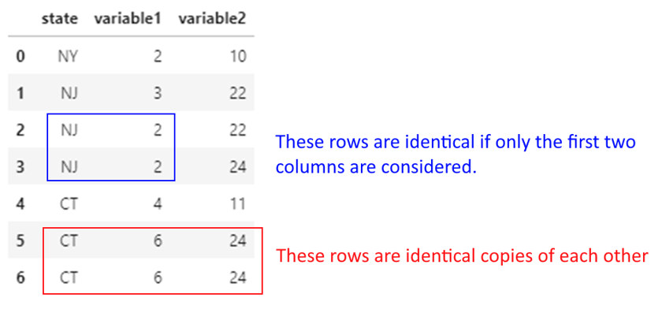
## Dropping duplicates considering all columns
df.drop_duplicates()| state | variable1 | variable2 | |
|---|---|---|---|
| 0 | NY | 2 | 10 |
| 1 | NJ | 3 | 22 |
| 2 | NJ | 2 | 22 |
| 3 | NJ | 2 | 24 |
| 4 | CT | 4 | 11 |
| 5 | CT | 6 | 24 |
## Dropping duplicates considering only the first two columns.
## (Note which of the two NJ records was retained!)
df.drop_duplicates(['state', 'variable1'], keep='first')| state | variable1 | variable2 | |
|---|---|---|---|
| 0 | NY | 2 | 10 |
| 1 | NJ | 3 | 22 |
| 2 | NJ | 2 | 22 |
| 4 | CT | 4 | 11 |
| 5 | CT | 6 | 24 |
We often need to replace values in data. For example, we may know that 0 means the data is not available, and may wish to replace zeros with NaN.
Let us replace state names in our previous toy dataset with their full names.
We do this using df.replace({'NJ': 'New Jersey', 'NY': 'New York', 'CT': 'Connecticut’}).
Note that this affects the entire dataframe, so be careful to select the right column name if you want the replacement to occur in only one column!
df.replace({'NJ': 'New Jersey', 'NY': 'New York', 'CT': 'Connecticut'})| state | variable1 | variable2 | |
|---|---|---|---|
| 0 | New York | 2 | 10 |
| 1 | New Jersey | 3 | 22 |
| 2 | New Jersey | 2 | 22 |
| 3 | New Jersey | 2 | 24 |
| 4 | Connecticut | 4 | 11 |
| 5 | Connecticut | 6 | 24 |
| 6 | Connecticut | 6 | 24 |
cut FunctionWe often need to convert continuous variables into categories.
For example, reconsider our toy dataset. Consider variable1. Say we want anything 2 or lower to be labeled as Small, 2 to 4 as Medium, and 4 to 6 as Large.
We can do this as follows: pd.cut(df.variable1, [0, 2, 4, 6], labels = ["Small", "Medium", "Large"])
Consider variable1. Say we want anything 2 or lower to be labeled as Small, 2 to 4 as Medium, and 4 to 6 as Large.
We use the pd.cut function to create the bins, and assign them labels as below.
If no labels are specified, the mathematical notation for intervals will be used for the bins, ie [(0, 2] < (2, 4] < (4, 6]] ( ( means does not include, and [ means includes)
df['NewColumn'] = pd.cut(df.variable1, [0, 2, 4, 6], labels = ["Small", "Medium", "Large"])
df| state | variable1 | variable2 | NewColumn | |
|---|---|---|---|---|
| 0 | NY | 2 | 10 | Small |
| 1 | NJ | 3 | 22 | Medium |
| 2 | NJ | 2 | 22 | Small |
| 3 | NJ | 2 | 24 | Small |
| 4 | CT | 4 | 11 | Medium |
| 5 | CT | 6 | 24 | Large |
| 6 | CT | 6 | 24 | Large |
df| state | variable1 | variable2 | NewColumn | |
|---|---|---|---|---|
| 0 | NY | 2 | 10 | Small |
| 1 | NJ | 3 | 22 | Medium |
| 2 | NJ | 2 | 22 | Small |
| 3 | NJ | 2 | 24 | Small |
| 4 | CT | 4 | 11 | Medium |
| 5 | CT | 6 | 24 | Large |
| 6 | CT | 6 | 24 | Large |
df['NewColumn'] = pd.cut(df.variable1, [0, 2, 4, 6])
df| state | variable1 | variable2 | NewColumn | |
|---|---|---|---|---|
| 0 | NY | 2 | 10 | (0, 2] |
| 1 | NJ | 3 | 22 | (2, 4] |
| 2 | NJ | 2 | 22 | (0, 2] |
| 3 | NJ | 2 | 24 | (0, 2] |
| 4 | CT | 4 | 11 | (2, 4] |
| 5 | CT | 6 | 24 | (4, 6] |
| 6 | CT | 6 | 24 | (4, 6] |
qcutSometimes we may desire an equal number of observations in our bins.
In such cases, we can use quantiles as bins but then the intervals may not be equal (though the count of observations in each bin may be similar.
We can also specify arbitrary quantiles as bins.
In Pandas, use pd.qcut(df.variable1, number_of_quantiles) to achieve this.
pd.qcut(df.variable1, 2)0 (1.999, 3.0]
1 (1.999, 3.0]
2 (1.999, 3.0]
3 (1.999, 3.0]
4 (3.0, 6.0]
5 (3.0, 6.0]
6 (3.0, 6.0]
Name: variable1, dtype: category
Categories (2, interval[float64, right]): [(1.999, 3.0] < (3.0, 6.0]]pd.qcut(diamonds.price, 4)0 (325.999, 950.0]
1 (325.999, 950.0]
2 (325.999, 950.0]
3 (325.999, 950.0]
4 (325.999, 950.0]
...
27745 (5324.25, 18823.0]
27746 (5324.25, 18823.0]
27747 (5324.25, 18823.0]
27748 (5324.25, 18823.0]
27749 (5324.25, 18823.0]
Name: price, Length: 53940, dtype: category
Categories (4, interval[float64, right]): [(325.999, 950.0] < (950.0, 2401.0] < (2401.0, 5324.25] < (5324.25, 18823.0]]diamonds['quartiles']=pd.qcut(diamonds.price, 4)
diamonds['Price_Category']=pd.qcut(diamonds.price, 4, labels=['Economy','Affordable','Pricey','Expensive'])
diamonds.sample(8)| price | carat | cut | color | clarity | depth | table | x | y | z | quartiles | Price_Category | |
|---|---|---|---|---|---|---|---|---|---|---|---|---|
| 44636 | 1608 | 0.58 | Very Good | E | VS2 | 60.3 | 57.0 | 5.41 | 5.44 | 3.27 | (950.0, 2401.0] | Affordable |
| 27231 | 17597 | 1.70 | Good | F | VS2 | 62.2 | 56.0 | 7.54 | 7.60 | 4.71 | (5324.25, 18823.0] | Expensive |
| 53017 | 2599 | 0.71 | Good | G | VS2 | 64.2 | 58.0 | 5.59 | 5.62 | 3.60 | (2401.0, 5324.25] | Pricey |
| 29881 | 710 | 0.30 | Very Good | D | VS2 | 60.3 | 60.0 | 4.28 | 4.31 | 2.59 | (325.999, 950.0] | Economy |
| 43150 | 1389 | 0.58 | Ideal | H | SI1 | 61.9 | 59.0 | 5.33 | 5.36 | 3.31 | (950.0, 2401.0] | Affordable |
| 207 | 2778 | 0.52 | Ideal | F | VVS1 | 61.3 | 55.0 | 5.19 | 5.22 | 3.19 | (2401.0, 5324.25] | Pricey |
| 15893 | 6354 | 1.01 | Very Good | G | VVS2 | 61.3 | 61.0 | 6.32 | 6.47 | 3.92 | (5324.25, 18823.0] | Expensive |
| 29260 | 698 | 0.31 | Premium | G | VS2 | 59.0 | 60.0 | 4.41 | 4.37 | 2.59 | (325.999, 950.0] | Economy |
# ..combining pandas functions to get a list of the unique quartiles and price_category columns
diamonds[['quartiles', 'Price_Category']].drop_duplicates().sort_values(by='quartiles').reset_index()| index | quartiles | Price_Category | |
|---|---|---|---|
| 0 | 0 | (325.999, 950.0] | Economy |
| 1 | 36691 | (950.0, 2401.0] | Affordable |
| 2 | 51735 | (2401.0, 5324.25] | Pricey |
| 3 | 12766 | (5324.25, 18823.0] | Expensive |
# ..looking at counts in each category
diamonds.groupby(['quartiles', 'Price_Category'], observed=False).agg({"carat":"count"}).query('carat>0').rename({'carat':'Count of Diamonds'}, axis=1)C:\Users\user\AppData\Local\Temp\ipykernel_17676\3774040384.py:2: FutureWarning: The default of observed=False is deprecated and will be changed to True in a future version of pandas. Pass observed=False to retain current behavior or observed=True to adopt the future default and silence this warning.
diamonds.groupby(['quartiles', 'Price_Category']).agg({"carat":"count"}).query('carat>0').rename({'carat':'Count of Diamonds'}, axis=1)| Count of Diamonds | ||
|---|---|---|
| quartiles | Price_Category | |
| (325.999, 950.0] | Economy | 13490 |
| (950.0, 2401.0] | Affordable | 13495 |
| (2401.0, 5324.25] | Pricey | 13470 |
| (5324.25, 18823.0] | Expensive | 13485 |
Often, we need to look at a sample of the observations. df.head() and df.tail() produce the same records each time, and often it is good to look at other data.
df.sample(n) gives you a random set of n observations from the data.
## Either a discrete number of rows,
diamonds.sample(3)| price | carat | cut | color | clarity | depth | table | x | y | z | quartiles | Price_Category | |
|---|---|---|---|---|---|---|---|---|---|---|---|---|
| 14773 | 5946 | 1.01 | Premium | G | VS2 | 59.0 | 61.0 | 6.62 | 6.56 | 3.89 | (5324.25, 18823.0] | Expensive |
| 14642 | 5913 | 1.20 | Good | D | SI1 | 63.5 | 55.0 | 6.70 | 6.78 | 4.28 | (5324.25, 18823.0] | Expensive |
| 48244 | 1951 | 0.56 | Good | E | VS1 | 59.8 | 61.0 | 5.35 | 5.36 | 3.20 | (950.0, 2401.0] | Affordable |
## or a fraction of the total data
diamonds.sample(frac = 0.00015)| price | carat | cut | color | clarity | depth | table | x | y | z | quartiles | Price_Category | |
|---|---|---|---|---|---|---|---|---|---|---|---|---|
| 38486 | 1031 | 0.42 | Ideal | F | VS1 | 61.4 | 57.0 | 4.78 | 4.83 | 2.95 | (950.0, 2401.0] | Affordable |
| 23687 | 11746 | 1.51 | Good | G | VS2 | 64.2 | 54.0 | 7.27 | 7.18 | 4.64 | (5324.25, 18823.0] | Expensive |
| 45832 | 1713 | 0.54 | Ideal | E | VS2 | 62.8 | 55.0 | 5.21 | 5.24 | 3.28 | (950.0, 2401.0] | Affordable |
| 3947 | 3502 | 0.80 | Premium | F | VS2 | 62.1 | 60.0 | 5.92 | 5.86 | 3.66 | (2401.0, 5324.25] | Pricey |
| 14828 | 5973 | 1.01 | Very Good | E | SI1 | 63.1 | 57.0 | 6.40 | 6.37 | 4.03 | (5324.25, 18823.0] | Expensive |
| 25001 | 13530 | 1.52 | Premium | F | VS2 | 59.4 | 60.0 | 7.61 | 7.50 | 4.49 | (5324.25, 18823.0] | Expensive |
| 6101 | 3975 | 0.91 | Premium | G | SI1 | 61.8 | 60.0 | 6.21 | 6.18 | 3.83 | (2401.0, 5324.25] | Pricey |
| 3898 | 3489 | 0.89 | Premium | H | VS1 | 60.5 | 59.0 | 6.22 | 6.17 | 3.75 | (2401.0, 5324.25] | Pricey |
We often have to combine text data, split it, find certain types of text, and perform various other functions on strings.
String munging operations often take up a lot of time when cleaning data.
Pandas offers a number of methods to perform string operations – refer list to the right.
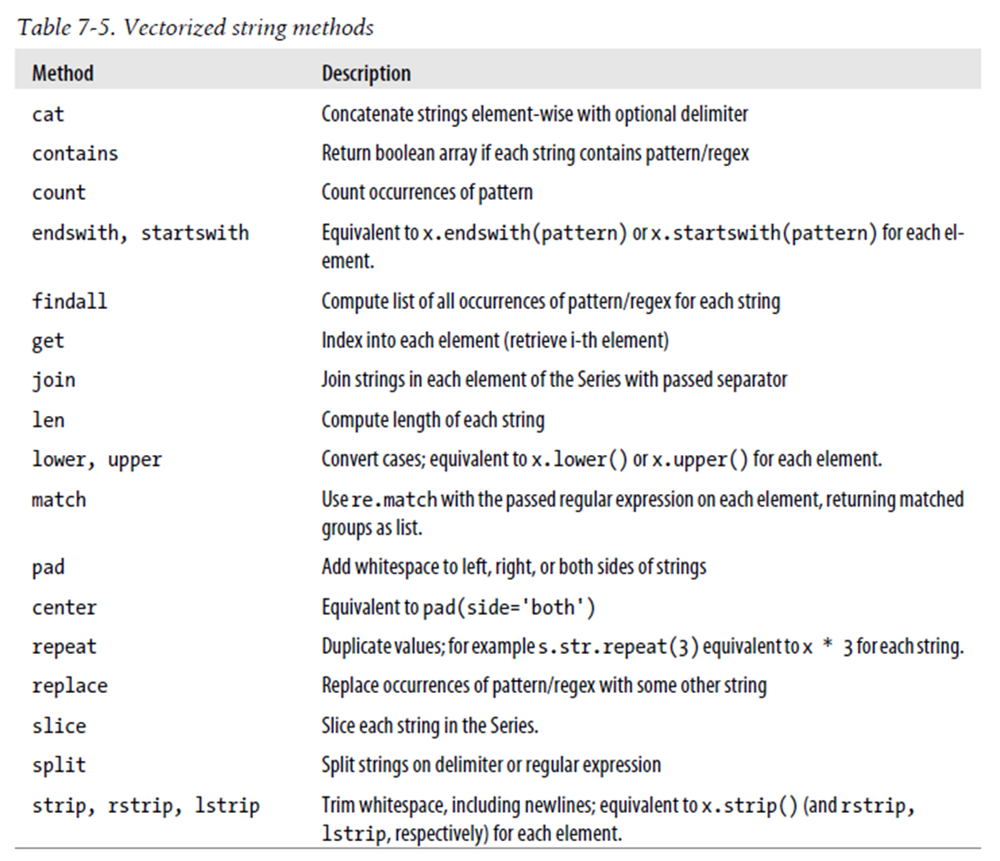
Source: Python for Data Analysis, Wes McKinney
mtcars| mpg | cyl | disp | hp | drat | wt | qsec | vs | am | gear | carb | |
|---|---|---|---|---|---|---|---|---|---|---|---|
| rownames | |||||||||||
| Mazda RX4 | 21.0 | 6 | 160.0 | 110 | 3.90 | 2.620 | 16.46 | 0 | 1 | 4 | 4 |
| Mazda RX4 Wag | 21.0 | 6 | 160.0 | 110 | 3.90 | 2.875 | 17.02 | 0 | 1 | 4 | 4 |
| Datsun 710 | 22.8 | 4 | 108.0 | 93 | 3.85 | 2.320 | 18.61 | 1 | 1 | 4 | 1 |
| Hornet 4 Drive | 21.4 | 6 | 258.0 | 110 | 3.08 | 3.215 | 19.44 | 1 | 0 | 3 | 1 |
| Hornet Sportabout | 18.7 | 8 | 360.0 | 175 | 3.15 | 3.440 | 17.02 | 0 | 0 | 3 | 2 |
| Valiant | 18.1 | 6 | 225.0 | 105 | 2.76 | 3.460 | 20.22 | 1 | 0 | 3 | 1 |
| Duster 360 | 14.3 | 8 | 360.0 | 245 | 3.21 | 3.570 | 15.84 | 0 | 0 | 3 | 4 |
| Merc 240D | 24.4 | 4 | 146.7 | 62 | 3.69 | 3.190 | 20.00 | 1 | 0 | 4 | 2 |
| Merc 230 | 22.8 | 4 | 140.8 | 95 | 3.92 | 3.150 | 22.90 | 1 | 0 | 4 | 2 |
| Merc 280 | 19.2 | 6 | 167.6 | 123 | 3.92 | 3.440 | 18.30 | 1 | 0 | 4 | 4 |
| Merc 280C | 17.8 | 6 | 167.6 | 123 | 3.92 | 3.440 | 18.90 | 1 | 0 | 4 | 4 |
| Merc 450SE | 16.4 | 8 | 275.8 | 180 | 3.07 | 4.070 | 17.40 | 0 | 0 | 3 | 3 |
| Merc 450SL | 17.3 | 8 | 275.8 | 180 | 3.07 | 3.730 | 17.60 | 0 | 0 | 3 | 3 |
| Merc 450SLC | 15.2 | 8 | 275.8 | 180 | 3.07 | 3.780 | 18.00 | 0 | 0 | 3 | 3 |
| Cadillac Fleetwood | 10.4 | 8 | 472.0 | 205 | 2.93 | 5.250 | 17.98 | 0 | 0 | 3 | 4 |
| Lincoln Continental | 10.4 | 8 | 460.0 | 215 | 3.00 | 5.424 | 17.82 | 0 | 0 | 3 | 4 |
| Chrysler Imperial | 14.7 | 8 | 440.0 | 230 | 3.23 | 5.345 | 17.42 | 0 | 0 | 3 | 4 |
| Fiat 128 | 32.4 | 4 | 78.7 | 66 | 4.08 | 2.200 | 19.47 | 1 | 1 | 4 | 1 |
| Honda Civic | 30.4 | 4 | 75.7 | 52 | 4.93 | 1.615 | 18.52 | 1 | 1 | 4 | 2 |
| Toyota Corolla | 33.9 | 4 | 71.1 | 65 | 4.22 | 1.835 | 19.90 | 1 | 1 | 4 | 1 |
| Toyota Corona | 21.5 | 4 | 120.1 | 97 | 3.70 | 2.465 | 20.01 | 1 | 0 | 3 | 1 |
| Dodge Challenger | 15.5 | 8 | 318.0 | 150 | 2.76 | 3.520 | 16.87 | 0 | 0 | 3 | 2 |
| AMC Javelin | 15.2 | 8 | 304.0 | 150 | 3.15 | 3.435 | 17.30 | 0 | 0 | 3 | 2 |
| Camaro Z28 | 13.3 | 8 | 350.0 | 245 | 3.73 | 3.840 | 15.41 | 0 | 0 | 3 | 4 |
| Pontiac Firebird | 19.2 | 8 | 400.0 | 175 | 3.08 | 3.845 | 17.05 | 0 | 0 | 3 | 2 |
| Fiat X1-9 | 27.3 | 4 | 79.0 | 66 | 4.08 | 1.935 | 18.90 | 1 | 1 | 4 | 1 |
| Porsche 914-2 | 26.0 | 4 | 120.3 | 91 | 4.43 | 2.140 | 16.70 | 0 | 1 | 5 | 2 |
| Lotus Europa | 30.4 | 4 | 95.1 | 113 | 3.77 | 1.513 | 16.90 | 1 | 1 | 5 | 2 |
| Ford Pantera L | 15.8 | 8 | 351.0 | 264 | 4.22 | 3.170 | 14.50 | 0 | 1 | 5 | 4 |
| Ferrari Dino | 19.7 | 6 | 145.0 | 175 | 3.62 | 2.770 | 15.50 | 0 | 1 | 5 | 6 |
| Maserati Bora | 15.0 | 8 | 301.0 | 335 | 3.54 | 3.570 | 14.60 | 0 | 1 | 5 | 8 |
| Volvo 142E | 21.4 | 4 | 121.0 | 109 | 4.11 | 2.780 | 18.60 | 1 | 1 | 4 | 2 |
## value_counts provide the frequency for categorical variables
mtcars.cyl.value_counts()cyl
8 14
4 11
6 7
Name: count, dtype: int64## ...and we can get percentages instead too
mtcars.cyl.value_counts(normalize=True)cyl
8 0.43750
4 0.34375
6 0.21875
Name: proportion, dtype: float64# Just checking what range(60,64) returns
list(range(60,64))[60, 61, 62, 63]diamonds.depth.describe()count 53940.000000
mean 61.749405
std 1.432621
min 43.000000
25% 61.000000
50% 61.800000
75% 62.500000
max 79.000000
Name: depth, dtype: float64## We can specify bins for numerical variables
# Below, we are saying give us value counts for 60-61, 61-62, 62-63.
diamonds = sns.load_dataset("diamonds")
diamonds.depth.value_counts(bins = range(60,64))(61.0, 62.0] 17945
(62.0, 63.0] 15348
(59.999, 61.0] 8451
Name: count, dtype: int64# Let us create a random vehicle crash dataframe with three columns showing
# city, cause of crash, and the dollar loss from the accident.
# Some of the values are missing, and indicated as a NaN (we create Nan
# values using np.nan)
df = pd.DataFrame(data = {'city': ['NYC', np.nan, 'Boston', 'Boston',
'WashingtonDC', np.nan, 'Boston',
'NYC', 'Boston', 'NYC'],
'cause': ['distracted', 'drowsy', 'drowsy',
np.nan, 'drunk', 'distracted',
'distracted', np.nan, np.nan, 'drunk'],
'dollar_loss': [8194, 4033, 9739, 4876, 4421,
6094, 5080, 2909, 9712, 2450]})
df| city | cause | dollar_loss | |
|---|---|---|---|
| 0 | NYC | distracted | 8194 |
| 1 | NaN | drowsy | 4033 |
| 2 | Boston | drowsy | 9739 |
| 3 | Boston | NaN | 4876 |
| 4 | WashingtonDC | drunk | 4421 |
| 5 | NaN | distracted | 6094 |
| 6 | Boston | distracted | 5080 |
| 7 | NYC | NaN | 2909 |
| 8 | Boston | NaN | 9712 |
| 9 | NYC | drunk | 2450 |
# Let us check the value_counts by city
# By default, missing values are ignored.
# So you don't see the NaNs.
# You can address it by setting dropna = False, as in the next cell
df.city.value_counts()city
Boston 4
NYC 3
WashingtonDC 1
Name: count, dtype: int64df.city.value_counts(dropna = False)city
Boston 4
NYC 3
NaN 2
WashingtonDC 1
Name: count, dtype: int64# Instead of counts, you can ask for percentages (expressed as a decimal)
df.city.value_counts(dropna = False, normalize = True)city
Boston 0.4
NYC 0.3
NaN 0.2
WashingtonDC 0.1
Name: proportion, dtype: float64# Sometimes, you may use the cumulative sum function to get
# totals upto that value. Try to run the cell to understand what it does.
df.city.value_counts().cumsum()city
Boston 4
NYC 7
WashingtonDC 8
Name: count, dtype: int64df.city.value_counts(dropna = False, normalize = True).cumsum()city
Boston 0.4
NYC 0.7
NaN 0.9
WashingtonDC 1.0
Name: proportion, dtype: float64Real-world data often has slight variations in string values (e.g., “New York” vs “new york” vs “NY”). The thefuzz library handles this efficiently:
# pip install thefuzz
from thefuzz import fuzz, process
fuzz.ratio("New York", "new york") # 89 — case insensitive similarity
fuzz.partial_ratio("NYC", "New York City") # 100 — partial match
# Find best match from a candidate list
process.extractOne("New Yrok", ["New York", "New Jersey", "Newark"])
# Returns: ("New York", 91, 0)This is invaluable when joining datasets from different sources where category labels do not match exactly.
diamonds.cut.unique()
## You can put `tolist()` at the end to get a cleaner output, or enclose everything in `list`.['Ideal', 'Premium', 'Good', 'Very Good', 'Fair']
Categories (5, object): ['Ideal', 'Premium', 'Very Good', 'Good', 'Fair']groupby and rename use as parameters the dict format, which is curly brackets, and key : value, each within quotes.
For example, {"old_colname" : "new_colname", "old_colname2" : "new_colname2"}
mydf = diamonds.groupby('cut', observed=True)
summ = mydf.agg({"price": "sum", "clarity": "count", "table": "mean"})
summ| price | clarity | table | |
|---|---|---|---|
| cut | |||
| Ideal | 74513487 | 21551 | 55.951668 |
| Premium | 63221498 | 13791 | 58.746095 |
| Very Good | 48107623 | 12082 | 57.956150 |
| Good | 19275009 | 4906 | 58.694639 |
| Fair | 7017600 | 1610 | 59.053789 |
## Alternatively, everything could be combined together:
diamonds.groupby('cut', observed=True).agg({"price": "sum", "clarity": "count", "table": "mean"})| price | clarity | table | |
|---|---|---|---|
| cut | |||
| Ideal | 74513487 | 21551 | 55.951668 |
| Premium | 63221498 | 13791 | 58.746095 |
| Very Good | 48107623 | 12082 | 57.956150 |
| Good | 19275009 | 4906 | 58.694639 |
| Fair | 7017600 | 1610 | 59.053789 |
## Or, groupby two variables:
diamonds.groupby(['cut', 'color'], observed=True).agg({"price": "sum", "clarity": "count", "table": "mean"})| price | clarity | table | ||
|---|---|---|---|---|
| cut | color | |||
| Ideal | D | 7450854 | 2834 | 55.965632 |
| E | 10138238 | 3903 | 55.967461 | |
| F | 12912518 | 3826 | 55.924203 | |
| G | 18171930 | 4884 | 55.902375 | |
| H | 12115278 | 3115 | 55.965843 | |
| I | 9317974 | 2093 | 56.021357 | |
| J | 4406695 | 896 | 56.012612 | |
| Premium | D | 5820962 | 1603 | 58.718964 |
| E | 8270443 | 2337 | 58.779461 | |
| F | 10081319 | 2331 | 58.679279 | |
| G | 13160170 | 2924 | 58.702360 | |
| H | 12311428 | 2360 | 58.792034 | |
| I | 8491146 | 1428 | 58.771849 | |
| J | 5086030 | 808 | 58.874752 | |
| Very Good | D | 5250817 | 1513 | 58.041309 |
| E | 7715165 | 2400 | 58.038875 | |
| F | 8177367 | 2164 | 57.848429 | |
| G | 8903461 | 2299 | 57.784428 | |
| H | 8272552 | 1824 | 57.903015 | |
| I | 6328079 | 1204 | 58.105150 | |
| J | 3460182 | 678 | 58.277729 | |
| Good | D | 2254363 | 662 | 58.541541 |
| E | 3194260 | 933 | 58.779957 | |
| F | 3177637 | 909 | 58.910891 | |
| G | 3591553 | 871 | 58.471986 | |
| H | 3001931 | 702 | 58.611111 | |
| I | 2650994 | 522 | 58.773946 | |
| J | 1404271 | 307 | 58.813029 | |
| Fair | D | 699443 | 163 | 58.969325 |
| E | 824838 | 224 | 59.364732 | |
| F | 1194025 | 312 | 59.453205 | |
| G | 1331126 | 314 | 58.773248 | |
| H | 1556112 | 303 | 58.696370 | |
| I | 819953 | 175 | 59.237143 | |
| J | 592103 | 119 | 58.917647 |
rename columns with GroupbyPandas 0.25+ introduced named aggregations, which produce cleaner output and are more readable:
# Old style -- column names can be ambiguous:
df.groupby("cut").agg({"price": ["mean", "sum"], "carat": "count"})
# New style -- named aggregation (pandas 0.25+):
df.groupby("cut").agg(
avg_price=("price", "mean"),
total_price=("price", "sum"),
diamond_count=("carat", "count")
)Named aggregation is preferred in production code because output column names are explicit and deterministic.
## We continue the above examples to rename the aggregated columns we created using groupby
diamonds.groupby('cut', observed=True).agg({"price": "sum",
"clarity": "count"}).rename(columns = {"price": "total_price", "clarity": "diamond_count"})| total_price | diamond_count | |
|---|---|---|
| cut | ||
| Ideal | 74513487 | 21551 |
| Premium | 63221498 | 13791 |
| Very Good | 48107623 | 12082 |
| Good | 19275009 | 4906 |
| Fair | 7017600 | 1610 |
The data analyst often has to combine data frames much in the same way as database join operations work, which requires connecting two tables based on a reference field.
(joins of all types are discussed here: https://pandas.pydata.org/pandas-docs/stable/user_guide/merging.htmlhttps://pandas.pydata.org/pandas-docs/stable/user_guide/merging.html)
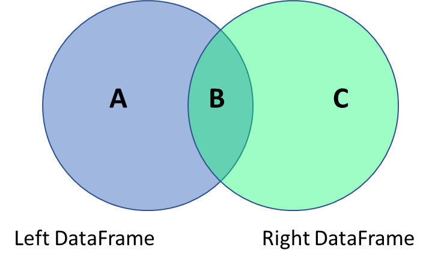
You can join data using the pandas merge function.
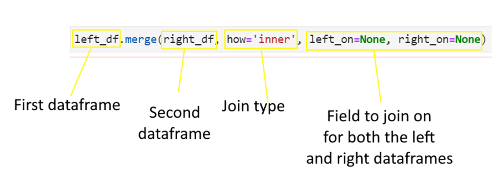
Consider the below data frames. The first one is the left data frame, and the second one is the right data frame.
Next consider the four types of joins - left, right, inner and outer.
## Left data frame
np.random.seed(2)
n = 5
df = pd.DataFrame(
{'state': list(np.random.choice(["New York", "Florida", "California"], size=(n))),
'gender': list(np.random.choice(["Male", "Female"], size=(n), p=[.4, .6])),
'housing': list(np.random.choice(["Rent", "Own"], size=(n))),
'height': list(np.random.randint(140,200,n))
})## Left data frame
df| state | gender | housing | height | |
|---|---|---|---|---|
| 0 | New York | Female | Own | 177 |
| 1 | Florida | Male | Rent | 179 |
| 2 | New York | Male | Rent | 143 |
| 3 | California | Female | Rent | 178 |
| 4 | California | Male | Rent | 144 |
## Right data frame
df_rent = pd.DataFrame(
{'state': ["Connecticut", "Florida", "California"],
'avg_rent': [3500, 2200, 4500]})## Right data frame
df_rent| state | avg_rent | |
|---|---|---|
| 0 | Connecticut | 3500 |
| 1 | Florida | 2200 |
| 2 | California | 4500 |
df.merge(df_rent, how = 'left' ,
left_on = 'state', right_on = 'state')| state | gender | housing | height | avg_rent | |
|---|---|---|---|---|---|
| 0 | New York | Female | Own | 177 | NaN |
| 1 | Florida | Male | Rent | 179 | 2200.0 |
| 2 | New York | Male | Rent | 143 | NaN |
| 3 | California | Female | Rent | 178 | 4500.0 |
| 4 | California | Male | Rent | 144 | 4500.0 |
df.merge(df_rent, how = 'right' ,
left_on = 'state', right_on = 'state')| state | gender | housing | height | avg_rent | |
|---|---|---|---|---|---|
| 0 | Connecticut | NaN | NaN | NaN | 3500 |
| 1 | Florida | Male | Rent | 179.0 | 2200 |
| 2 | California | Female | Rent | 178.0 | 4500 |
| 3 | California | Male | Rent | 144.0 | 4500 |
df.merge(df_rent, how = 'inner' ,
left_on = 'state', right_on = 'state')| state | gender | housing | height | avg_rent | |
|---|---|---|---|---|---|
| 0 | Florida | Male | Rent | 179 | 2200 |
| 1 | California | Female | Rent | 178 | 4500 |
| 2 | California | Male | Rent | 144 | 4500 |
df.merge(df_rent, how = 'outer' ,
left_on = 'state', right_on = 'state')| state | gender | housing | height | avg_rent | |
|---|---|---|---|---|---|
| 0 | California | Female | Rent | 178.0 | 4500.0 |
| 1 | California | Male | Rent | 144.0 | 4500.0 |
| 2 | Connecticut | NaN | NaN | NaN | 3500.0 |
| 3 | Florida | Male | Rent | 179.0 | 2200.0 |
| 4 | New York | Female | Own | 177.0 | NaN |
| 5 | New York | Male | Rent | 143.0 | NaN |
Join everything with everything!
df.merge(df_rent, how = 'cross')| state_x | gender | housing | height | state_y | avg_rent | |
|---|---|---|---|---|---|---|
| 0 | New York | Female | Own | 177 | Connecticut | 3500 |
| 1 | New York | Female | Own | 177 | Florida | 2200 |
| 2 | New York | Female | Own | 177 | California | 4500 |
| 3 | Florida | Male | Rent | 179 | Connecticut | 3500 |
| 4 | Florida | Male | Rent | 179 | Florida | 2200 |
| 5 | Florida | Male | Rent | 179 | California | 4500 |
| 6 | New York | Male | Rent | 143 | Connecticut | 3500 |
| 7 | New York | Male | Rent | 143 | Florida | 2200 |
| 8 | New York | Male | Rent | 143 | California | 4500 |
| 9 | California | Female | Rent | 178 | Connecticut | 3500 |
| 10 | California | Female | Rent | 178 | Florida | 2200 |
| 11 | California | Female | Rent | 178 | California | 4500 |
| 12 | California | Male | Rent | 144 | Connecticut | 3500 |
| 13 | California | Male | Rent | 144 | Florida | 2200 |
| 14 | California | Male | Rent | 144 | California | 4500 |
Sometimes we need to simply combine datasets without any fancy operations.
Imagine you have 3 files, each for a different month, and you need to stack them vertically one after the other.
Occasionally, you may need to stack datasets horizontally, ie right next to each other. For example, imagine you have 2 files, one with names and ages, and the other with names and income. You may just want to ‘stack’ the data next to each other.
As a common operation, this can be done with Pandas’s concat() command.
We use the same df and df_rent dataframes as in the prior slide to illustrate how pd.concat works.
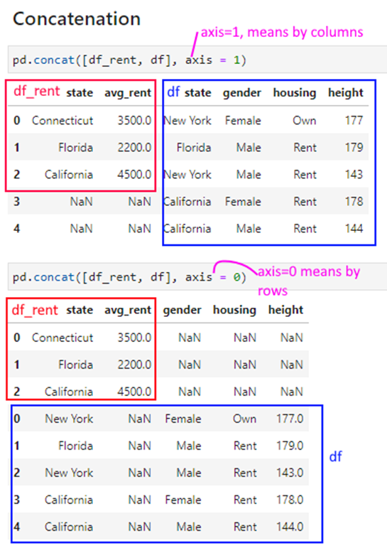
pd.concat([df_rent, df], axis = 1)| state | avg_rent | state | gender | housing | height | |
|---|---|---|---|---|---|---|
| 0 | Connecticut | 3500.0 | New York | Female | Own | 177 |
| 1 | Florida | 2200.0 | Florida | Male | Rent | 179 |
| 2 | California | 4500.0 | New York | Male | Rent | 143 |
| 3 | NaN | NaN | California | Female | Rent | 178 |
| 4 | NaN | NaN | California | Male | Rent | 144 |
pd.concat([df_rent, df], axis = 0)| state | avg_rent | gender | housing | height | |
|---|---|---|---|---|---|
| 0 | Connecticut | 3500.0 | NaN | NaN | NaN |
| 1 | Florida | 2200.0 | NaN | NaN | NaN |
| 2 | California | 4500.0 | NaN | NaN | NaN |
| 0 | New York | NaN | Female | Own | 177.0 |
| 1 | Florida | NaN | Male | Rent | 179.0 |
| 2 | New York | NaN | Male | Rent | 143.0 |
| 3 | California | NaN | Female | Rent | 178.0 |
| 4 | California | NaN | Male | Rent | 144.0 |
We load the penguins dataset.
# Load the penguins dataset
df = sns.load_dataset('penguins')
df| species | island | bill_length_mm | bill_depth_mm | flipper_length_mm | body_mass_g | sex | |
|---|---|---|---|---|---|---|---|
| 0 | Adelie | Torgersen | 39.1 | 18.7 | 181.0 | 3750.0 | Male |
| 1 | Adelie | Torgersen | 39.5 | 17.4 | 186.0 | 3800.0 | Female |
| 2 | Adelie | Torgersen | 40.3 | 18.0 | 195.0 | 3250.0 | Female |
| 3 | Adelie | Torgersen | NaN | NaN | NaN | NaN | NaN |
| 4 | Adelie | Torgersen | 36.7 | 19.3 | 193.0 | 3450.0 | Female |
| ... | ... | ... | ... | ... | ... | ... | ... |
| 339 | Gentoo | Biscoe | NaN | NaN | NaN | NaN | NaN |
| 340 | Gentoo | Biscoe | 46.8 | 14.3 | 215.0 | 4850.0 | Female |
| 341 | Gentoo | Biscoe | 50.4 | 15.7 | 222.0 | 5750.0 | Male |
| 342 | Gentoo | Biscoe | 45.2 | 14.8 | 212.0 | 5200.0 | Female |
| 343 | Gentoo | Biscoe | 49.9 | 16.1 | 213.0 | 5400.0 | Male |
344 rows × 7 columns
df1 = df.sample(6).reset_index(drop=True)
df2 = df.sample(4).reset_index(drop=True)df1| species | island | bill_length_mm | bill_depth_mm | flipper_length_mm | body_mass_g | sex | |
|---|---|---|---|---|---|---|---|
| 0 | Gentoo | Biscoe | 45.2 | 15.8 | 215.0 | 5300.0 | Male |
| 1 | Adelie | Biscoe | 37.9 | 18.6 | 172.0 | 3150.0 | Female |
| 2 | Adelie | Biscoe | 37.8 | 18.3 | 174.0 | 3400.0 | Female |
| 3 | Adelie | Dream | 40.6 | 17.2 | 187.0 | 3475.0 | Male |
| 4 | Chinstrap | Dream | 50.1 | 17.9 | 190.0 | 3400.0 | Female |
| 5 | Gentoo | Biscoe | 46.5 | 13.5 | 210.0 | 4550.0 | Female |
df1.columnsIndex(['species', 'island', 'bill_length_mm', 'bill_depth_mm',
'flipper_length_mm', 'body_mass_g', 'sex'],
dtype='object')df1 = df1[['bill_length_mm', 'bill_depth_mm','body_mass_g', 'sex','flipper_length_mm', ]]
df1| bill_length_mm | bill_depth_mm | body_mass_g | sex | flipper_length_mm | |
|---|---|---|---|---|---|
| 0 | 45.2 | 15.8 | 5300.0 | Male | 215.0 |
| 1 | 37.9 | 18.6 | 3150.0 | Female | 172.0 |
| 2 | 37.8 | 18.3 | 3400.0 | Female | 174.0 |
| 3 | 40.6 | 17.2 | 3475.0 | Male | 187.0 |
| 4 | 50.1 | 17.9 | 3400.0 | Female | 190.0 |
| 5 | 46.5 | 13.5 | 4550.0 | Female | 210.0 |
df2| species | island | bill_length_mm | bill_depth_mm | flipper_length_mm | body_mass_g | sex | |
|---|---|---|---|---|---|---|---|
| 0 | Gentoo | Biscoe | 46.4 | 15.6 | 221.0 | 5000.0 | Male |
| 1 | Gentoo | Biscoe | 48.4 | 14.4 | 203.0 | 4625.0 | Female |
| 2 | Gentoo | Biscoe | 49.0 | 16.1 | 216.0 | 5550.0 | Male |
| 3 | Adelie | Torgersen | 35.9 | 16.6 | 190.0 | 3050.0 | Female |
pd.concat([df1,df2], axis=0)| bill_length_mm | bill_depth_mm | body_mass_g | sex | flipper_length_mm | species | island | |
|---|---|---|---|---|---|---|---|
| 0 | 45.2 | 15.8 | 5300.0 | Male | 215.0 | NaN | NaN |
| 1 | 37.9 | 18.6 | 3150.0 | Female | 172.0 | NaN | NaN |
| 2 | 37.8 | 18.3 | 3400.0 | Female | 174.0 | NaN | NaN |
| 3 | 40.6 | 17.2 | 3475.0 | Male | 187.0 | NaN | NaN |
| 4 | 50.1 | 17.9 | 3400.0 | Female | 190.0 | NaN | NaN |
| 5 | 46.5 | 13.5 | 4550.0 | Female | 210.0 | NaN | NaN |
| 0 | 46.4 | 15.6 | 5000.0 | Male | 221.0 | Gentoo | Biscoe |
| 1 | 48.4 | 14.4 | 4625.0 | Female | 203.0 | Gentoo | Biscoe |
| 2 | 49.0 | 16.1 | 5550.0 | Male | 216.0 | Gentoo | Biscoe |
| 3 | 35.9 | 16.6 | 3050.0 | Female | 190.0 | Adelie | Torgersen |
pd.concat([df1,df2], axis=0)| species | island | bill_length_mm | bill_depth_mm | flipper_length_mm | body_mass_g | sex | |
|---|---|---|---|---|---|---|---|
| 0 | Gentoo | Biscoe | 45.2 | 15.8 | 215.0 | 5300.0 | Male |
| 1 | Adelie | Biscoe | 37.9 | 18.6 | 172.0 | 3150.0 | Female |
| 2 | Adelie | Biscoe | 37.8 | 18.3 | 174.0 | 3400.0 | Female |
| 3 | Adelie | Dream | 40.6 | 17.2 | 187.0 | 3475.0 | Male |
| 4 | Chinstrap | Dream | 50.1 | 17.9 | 190.0 | 3400.0 | Female |
| 5 | Gentoo | Biscoe | 46.5 | 13.5 | 210.0 | 4550.0 | Female |
| 0 | Gentoo | Biscoe | 46.4 | 15.6 | 221.0 | 5000.0 | Male |
| 1 | Gentoo | Biscoe | 48.4 | 14.4 | 203.0 | 4625.0 | Female |
| 2 | Gentoo | Biscoe | 49.0 | 16.1 | 216.0 | 5550.0 | Male |
| 3 | Adelie | Torgersen | 35.9 | 16.6 | 190.0 | 3050.0 | Female |
pd.concat([df1,df2], axis=1)| species | island | bill_length_mm | bill_depth_mm | flipper_length_mm | body_mass_g | sex | species | island | bill_length_mm | bill_depth_mm | flipper_length_mm | body_mass_g | sex | |
|---|---|---|---|---|---|---|---|---|---|---|---|---|---|---|
| 0 | Gentoo | Biscoe | 45.2 | 15.8 | 215.0 | 5300.0 | Male | Gentoo | Biscoe | 46.4 | 15.6 | 221.0 | 5000.0 | Male |
| 1 | Adelie | Biscoe | 37.9 | 18.6 | 172.0 | 3150.0 | Female | Gentoo | Biscoe | 48.4 | 14.4 | 203.0 | 4625.0 | Female |
| 2 | Adelie | Biscoe | 37.8 | 18.3 | 174.0 | 3400.0 | Female | Gentoo | Biscoe | 49.0 | 16.1 | 216.0 | 5550.0 | Male |
| 3 | Adelie | Dream | 40.6 | 17.2 | 187.0 | 3475.0 | Male | Adelie | Torgersen | 35.9 | 16.6 | 190.0 | 3050.0 | Female |
| 4 | Chinstrap | Dream | 50.1 | 17.9 | 190.0 | 3400.0 | Female | NaN | NaN | NaN | NaN | NaN | NaN | NaN |
| 5 | Gentoo | Biscoe | 46.5 | 13.5 | 210.0 | 4550.0 | Female | NaN | NaN | NaN | NaN | NaN | NaN | NaN |
df2.index = [3,4,5,6]pd.concat([df1,df2], axis=0)| species | island | bill_length_mm | bill_depth_mm | flipper_length_mm | body_mass_g | sex | |
|---|---|---|---|---|---|---|---|
| 0 | Gentoo | Biscoe | 45.2 | 15.8 | 215.0 | 5300.0 | Male |
| 1 | Adelie | Biscoe | 37.9 | 18.6 | 172.0 | 3150.0 | Female |
| 2 | Adelie | Biscoe | 37.8 | 18.3 | 174.0 | 3400.0 | Female |
| 3 | Adelie | Dream | 40.6 | 17.2 | 187.0 | 3475.0 | Male |
| 4 | Chinstrap | Dream | 50.1 | 17.9 | 190.0 | 3400.0 | Female |
| 5 | Gentoo | Biscoe | 46.5 | 13.5 | 210.0 | 4550.0 | Female |
| 3 | Gentoo | Biscoe | 46.4 | 15.6 | 221.0 | 5000.0 | Male |
| 4 | Gentoo | Biscoe | 48.4 | 14.4 | 203.0 | 4625.0 | Female |
| 5 | Gentoo | Biscoe | 49.0 | 16.1 | 216.0 | 5550.0 | Male |
| 6 | Adelie | Torgersen | 35.9 | 16.6 | 190.0 | 3050.0 | Female |
pd.concat([df1,df2], axis=1)| species | island | bill_length_mm | bill_depth_mm | flipper_length_mm | body_mass_g | sex | species | island | bill_length_mm | bill_depth_mm | flipper_length_mm | body_mass_g | sex | |
|---|---|---|---|---|---|---|---|---|---|---|---|---|---|---|
| 0 | Gentoo | Biscoe | 45.2 | 15.8 | 215.0 | 5300.0 | Male | NaN | NaN | NaN | NaN | NaN | NaN | NaN |
| 1 | Adelie | Biscoe | 37.9 | 18.6 | 172.0 | 3150.0 | Female | NaN | NaN | NaN | NaN | NaN | NaN | NaN |
| 2 | Adelie | Biscoe | 37.8 | 18.3 | 174.0 | 3400.0 | Female | NaN | NaN | NaN | NaN | NaN | NaN | NaN |
| 3 | Adelie | Dream | 40.6 | 17.2 | 187.0 | 3475.0 | Male | Gentoo | Biscoe | 46.4 | 15.6 | 221.0 | 5000.0 | Male |
| 4 | Chinstrap | Dream | 50.1 | 17.9 | 190.0 | 3400.0 | Female | Gentoo | Biscoe | 48.4 | 14.4 | 203.0 | 4625.0 | Female |
| 5 | Gentoo | Biscoe | 46.5 | 13.5 | 210.0 | 4550.0 | Female | Gentoo | Biscoe | 49.0 | 16.1 | 216.0 | 5550.0 | Male |
| 6 | NaN | NaN | NaN | NaN | NaN | NaN | NaN | Adelie | Torgersen | 35.9 | 16.6 | 190.0 | 3050.0 | Female |
# Notice above dataframe has columns with identical names
# For example,the column bill_depth_mm appears twice.
# If we try to select that column, all columns with that name are listed
temp = pd.concat([df1,df2], axis=1)
temp[['bill_depth_mm']]| bill_depth_mm | bill_depth_mm | |
|---|---|---|
| 0 | 15.8 | NaN |
| 1 | 18.6 | NaN |
| 2 | 18.3 | NaN |
| 3 | 17.2 | 15.6 |
| 4 | 17.9 | 14.4 |
| 5 | 13.5 | 16.1 |
| 6 | NaN | 16.6 |
Missing data takes one of two forms.
1. Entire rows of data may be missing: In such situations, you will need to think about if the remaining data set is still valuable.
- Consider if you can assess how much data is missing. If only a small portion of the data is missing, say 10%, then you may still be able to use it for meaningful analytics.
- Consider why the data is missing. If the absent data is missing at random, what you have available may still be a representative sample.
- Consider if you can re-acquire the data, or address the underlying problems and wait to collect the complete dataset.
2. Some values may be missing in the data, while others are present.
- We can remove the rows that have missing values.
- We can replace the missing values with a static default (eg, the mean, or the median).
- We can try to compute the values in a more structured way.
An example of missing data appears in the picture below. Next, we will create this dataset and artifically insert some missing values.
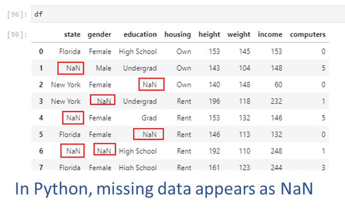
YouTubeVideo('106wMohSma8', width=672, height=378)## We create a random dataset
np.random.seed(1)
n = 5
df = pd.DataFrame(
{'state': list(np.random.choice(["New York", "Florida", "California"], size=(n))),
'gender': list(np.random.choice(["Male", "Female"], size=(n), p=[.4, .6])),
'housing': list(np.random.choice(["Rent", "Own"], size=(n))),
'height': list(np.random.randint(140,200,n))
})## Now we loop through the data and replace a quarter of the values with NaN (`np.nan`)
for row in range(df.shape[0]):
for col in range(df.shape[1]):
if np.random.uniform() < 0.25:
df.iloc[row,col] = np.nan## Notice the `NaN` values inserted
df| state | gender | housing | height | |
|---|---|---|---|---|
| 0 | Florida | Male | Rent | 160.0 |
| 1 | New York | Male | Rent | 151.0 |
| 2 | NaN | Male | Rent | 182.0 |
| 3 | Florida | Male | NaN | 168.0 |
| 4 | Florida | Male | Rent | NaN |
We can count the number of null values, by rows as well as columns.
In pandas, it is easy to identify null values using df.isna(). While this provides us a series of True/False Booleans, we can use the sum() command to get the total count of nulls as Booleans are also considered equal to 1 and 0 (for True and False respectively).
Using the axis parameter, we can specify whether to count missing values by rows (axis = 1) or by columns (axis = 0, the default).
df.isna().sum(axis=0)df.isna().sum(axis=1)## Count missing values - by columns
df.isna().sum(axis=0)state 1
gender 0
housing 1
height 1
dtype: int64## Count missing values - by rows
df.isna().sum(axis=1)0 0
1 0
2 1
3 1
4 1
dtype: int64## Count missing values - by columns, sorted
df.isna().sum(axis=0).sort_values(ascending=False)state 1
housing 1
height 1
gender 0
dtype: int64df.isna().sum(axis=1).sort_values(ascending=False)2 1
3 1
4 1
0 0
1 0
dtype: int64Sometimes, entire rows/observations or columns/features data may be missing in the data (for example, you discover that you are missing data for a city, person, year etc). If the data is not there in the first place, there is no easy programmatic way to discover the omission. You may find out about it only accidentally, or through your exploratory data analysis.
In such situations, you will need to think about if the remaining data set is still valuable.
- Consider if you can assess how much data is missing. If only a small portion of the data is missing, say 10%, then you may still be able to use it for meaningful analytics.
- Consider why the data is missing. If the absent data is missing at random, what you have available may still be a representative sample.
- Consider if you can re-acquire the data, or address the underlying problems and wait to collect the complete dataset.
Approaches
When some values in the data are missing:
1. Drop rows with nulls: If data is missing at random, and the remaining data is sufficient for us to build generalizable analytics and models.
- If data is not missing at random, and rows with missing data are dropped, this can introduce bias into our models.
2. Drop features/columns with nulls: Features that have a great deal of data missing at random can often be dropped without affecting analytical usefulness.
3. Replace with a static default: Using a summary statistic, eg mean or median, is often an easy way to replace missing values.
4. Impute missing values using more advanced methods.
The simplest approach is to drop the rows that have a missing value. This will leave only the rows that are fully populated.
Pandas offers the function dropna() to remove rows with missing values.
You can control which rows are deleted:
df| state | gender | housing | height | |
|---|---|---|---|---|
| 0 | Florida | Male | Rent | 160.0 |
| 1 | New York | Male | Rent | 151.0 |
| 2 | NaN | Male | Rent | 182.0 |
| 3 | Florida | Male | NaN | 168.0 |
| 4 | Florida | Male | Rent | NaN |
df.dropna()| state | gender | housing | height | |
|---|---|---|---|---|
| 0 | Florida | Male | Rent | 160.0 |
| 1 | New York | Male | Rent | 151.0 |
Very similar approach as for rows, except the axis along which we evaluate deletion is vertical instead of horizontal.
Any columns that have a missing value are deleted.
df.dropna(axis = 1)| gender | |
|---|---|
| 0 | Male |
| 1 | Male |
| 2 | Male |
| 3 | Male |
| 4 | Male |
df| state | gender | housing | height | |
|---|---|---|---|---|
| 0 | Florida | Male | Rent | 160.0 |
| 1 | New York | Male | Rent | 151.0 |
| 2 | NaN | Male | Rent | 182.0 |
| 3 | Florida | Male | NaN | 168.0 |
| 4 | Florida | Male | Rent | NaN |
Dropping rows or columns that have missing data may not always be a feasible strategy as the remainder of the dataset may become too small.
Another reason is that we may not want to throw away all the other known information just because one data point for an observation or a feature is not known.
If the data is not missing at random (for example, one sensor in the data collection apparatus was malfunctioning) and all the NaN values relate to a particular type of observation, we will introduce bias into any analytics we perform.
A viable approach in such cases may be to replace the missing values with an estimate, such as the mean, the median, or the most frequent value.
Using pd.fillna(), we can fill any holes in the data in a number of ways. With df.fillna(constant), we can replace all NaN values with a constant we specify. However, if NaNs appear in multiple columns, we may need to specify a different constant for each column.
With pd.fillna(data.mean()), we can replace NaNs with the mean, and similarly for median and other calculated measures.
## Fill missing values across the entire dataframe
df.fillna('Connecticut')| state | gender | housing | height | |
|---|---|---|---|---|
| 0 | Florida | Male | Rent | 160.0 |
| 1 | New York | Male | Rent | 151.0 |
| 2 | Connecticut | Male | Rent | 182.0 |
| 3 | Florida | Male | Connecticut | 168.0 |
| 4 | Florida | Male | Rent | Connecticut |
## Fill missing values in only a single column
df.fillna({'housing': 'Connecticut'}, inplace=True)
df| species | island | bill_length_mm | bill_depth_mm | flipper_length_mm | body_mass_g | sex | |
|---|---|---|---|---|---|---|---|
| 0 | Adelie | Torgersen | 39.1 | 18.7 | 181.0 | 3750.0 | Male |
| 1 | Adelie | Torgersen | 39.5 | 17.4 | 186.0 | 3800.0 | Female |
| 2 | Adelie | Torgersen | 40.3 | 18.0 | 195.0 | 3250.0 | Female |
| 3 | Adelie | Torgersen | NaN | NaN | NaN | NaN | NaN |
| 4 | Adelie | Torgersen | 36.7 | 19.3 | 193.0 | 3450.0 | Female |
| ... | ... | ... | ... | ... | ... | ... | ... |
| 339 | Gentoo | Biscoe | NaN | NaN | NaN | NaN | NaN |
| 340 | Gentoo | Biscoe | 46.8 | 14.3 | 215.0 | 4850.0 | Female |
| 341 | Gentoo | Biscoe | 50.4 | 15.7 | 222.0 | 5750.0 | Male |
| 342 | Gentoo | Biscoe | 45.2 | 14.8 | 212.0 | 5200.0 | Female |
| 343 | Gentoo | Biscoe | 49.9 | 16.1 | 213.0 | 5400.0 | Male |
344 rows × 7 columns
For time series data, we might like to use forward-fill (also called ‘last-observation-carried-forward’, or locf), and backward-fill (opposite of locf).
df.ffill: propagate last valid observation forward to next validdf.bfill: use next valid observation to fill gap.## Let us make some of the height numbers NaN
df.loc[[0,3], 'height'] = np.nandf| state | gender | housing | height | |
|---|---|---|---|---|
| 0 | Florida | Male | Rent | NaN |
| 1 | New York | Male | Rent | 151.0 |
| 2 | Connecticut | Male | Rent | 182.0 |
| 3 | Florida | Male | NaN | NaN |
| 4 | Florida | Male | Rent | NaN |
# Forward fill
df.ffill()| state | gender | housing | height | |
|---|---|---|---|---|
| 0 | Florida | Male | Rent | NaN |
| 1 | New York | Male | Rent | 151.0 |
| 2 | Connecticut | Male | Rent | 182.0 |
| 3 | Florida | Male | Rent | 182.0 |
| 4 | Florida | Male | Rent | 182.0 |
# Backward fill
df.bfill()| state | gender | housing | height | |
|---|---|---|---|---|
| 0 | Florida | Male | Rent | 151.0 |
| 1 | New York | Male | Rent | 151.0 |
| 2 | Connecticut | Male | Rent | 182.0 |
| 3 | Florida | Male | Rent | NaN |
| 4 | Florida | Male | Rent | NaN |
# We load some data on sales of independent winemakers
import pmdarima
df = pd.DataFrame(pmdarima.datasets.load_wineind(as_series = True), columns=['sales'])
df| sales | |
|---|---|
| Jan 1980 | 15136.0 |
| Feb 1980 | 16733.0 |
| Mar 1980 | 20016.0 |
| Apr 1980 | 17708.0 |
| May 1980 | 18019.0 |
| ... | ... |
| Apr 1994 | 26323.0 |
| May 1994 | 23779.0 |
| Jun 1994 | 27549.0 |
| Jul 1994 | 29660.0 |
| Aug 1994 | 23356.0 |
176 rows × 1 columns
## Now we loop through the data and replace a quarter of the values with NaN (`np.nan`)
for row in range(df.shape[0]):
for col in range(df.shape[1]):
if np.random.uniform() < 0.5:
df.iloc[row,col] = np.nandf = df[:20]
df| sales | |
|---|---|
| Jan 1980 | NaN |
| Feb 1980 | NaN |
| Mar 1980 | 20016.0 |
| Apr 1980 | NaN |
| May 1980 | NaN |
| Jun 1980 | 19227.0 |
| Jul 1980 | 22893.0 |
| Aug 1980 | NaN |
| Sep 1980 | NaN |
| Oct 1980 | NaN |
| Nov 1980 | NaN |
| Dec 1980 | NaN |
| Jan 1981 | NaN |
| Feb 1981 | 17977.0 |
| Mar 1981 | NaN |
| Apr 1981 | 21354.0 |
| May 1981 | NaN |
| Jun 1981 | 22125.0 |
| Jul 1981 | 25817.0 |
| Aug 1981 | NaN |
# pandas 2.x: opt-in to new downcasting behavior to silence FutureWarning
with pd.option_context('future.no_silent_downcasting', True):
display(df.ffill())| sales | |
|---|---|
| Jan 1980 | NaN |
| Feb 1980 | NaN |
| Mar 1980 | 20016.0 |
| Apr 1980 | 20016.0 |
| May 1980 | 20016.0 |
| Jun 1980 | 19227.0 |
| Jul 1980 | 22893.0 |
| Aug 1980 | 22893.0 |
| Sep 1980 | 22893.0 |
| Oct 1980 | 22893.0 |
| Nov 1980 | 22893.0 |
| Dec 1980 | 22893.0 |
| Jan 1981 | 22893.0 |
| Feb 1981 | 17977.0 |
| Mar 1981 | 17977.0 |
| Apr 1981 | 21354.0 |
| May 1981 | 21354.0 |
| Jun 1981 | 22125.0 |
| Jul 1981 | 25817.0 |
| Aug 1981 | 25817.0 |
with pd.option_context('future.no_silent_downcasting', True):
display(df.bfill())| sales | |
|---|---|
| Jan 1980 | 20016.0 |
| Feb 1980 | 20016.0 |
| Mar 1980 | 20016.0 |
| Apr 1980 | 19227.0 |
| May 1980 | 19227.0 |
| Jun 1980 | 19227.0 |
| Jul 1980 | 22893.0 |
| Aug 1980 | 17977.0 |
| Sep 1980 | 17977.0 |
| Oct 1980 | 17977.0 |
| Nov 1980 | 17977.0 |
| Dec 1980 | 17977.0 |
| Jan 1981 | 17977.0 |
| Feb 1981 | 17977.0 |
| Mar 1981 | 21354.0 |
| Apr 1981 | 21354.0 |
| May 1981 | 22125.0 |
| Jun 1981 | 22125.0 |
| Jul 1981 | 25817.0 |
| Aug 1981 | NaN |
Discarding entire rows or columns, or replacing information with the mean etc may work well in some situations. A more sophisticated approach may be to model the missing data, and use ML techniques to estimate the missing information.
Scikit-learn’s documentation describes multivariate feature imputation as follows: > A more sophisticated approach is to use the IterativeImputer class, which models each feature with missing values as a function of other features, and uses that estimate for imputation. It does so in an iterated round-robin fashion: at each step, a feature column is designated as output y and the other feature columns are treated as inputs X. A regressor is fit on (X, y) for known y. Then, the regressor is used to predict the missing values of y. This is done for each feature in an iterative fashion, and then is repeated for max_iter imputation rounds. The results of the final imputation round are returned.
Source: https://scikit-learn.org/stable/modules/impute.html
The R ecosystem has several libraries that implement the MICE algorithm.
A nice write-up and graphic explaining the process is available here: https://cran.r-project.org/web/packages/miceRanger/vignettes/miceAlgorithm.html
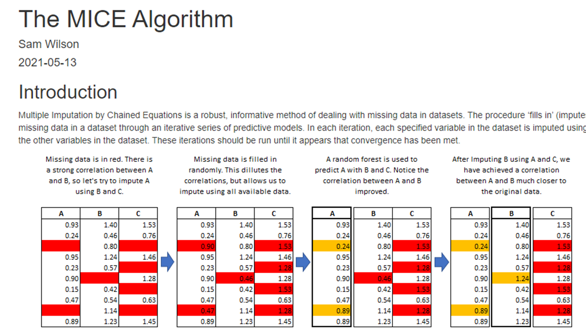
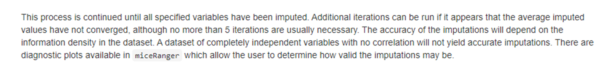
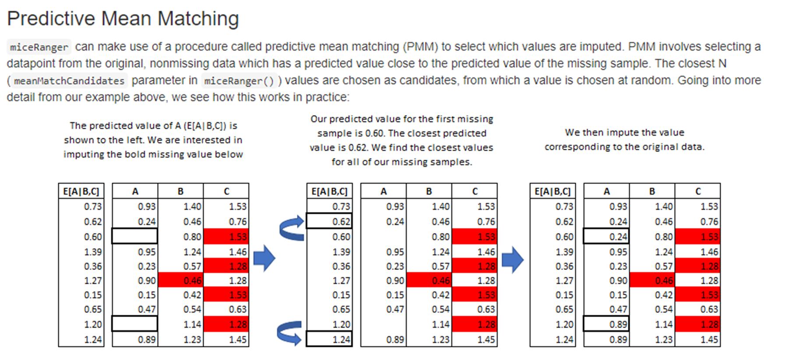
Sourced from cran.r-project.orgLet us get some data where we can perform some imputations. But because we are working with Python, we will not use the above, but use sklearn’s imputer.
## Let us look at the mtcars dataset
import statsmodels.api as sm
df = sm.datasets.get_rdataset('mtcars').datadf| mpg | cyl | disp | hp | drat | wt | qsec | vs | am | gear | carb | |
|---|---|---|---|---|---|---|---|---|---|---|---|
| rownames | |||||||||||
| Mazda RX4 | 21.0 | 6 | 160.0 | 110 | 3.90 | 2.620 | 16.46 | 0 | 1 | 4 | 4 |
| Mazda RX4 Wag | 21.0 | 6 | 160.0 | 110 | 3.90 | 2.875 | 17.02 | 0 | 1 | 4 | 4 |
| Datsun 710 | 22.8 | 4 | 108.0 | 93 | 3.85 | 2.320 | 18.61 | 1 | 1 | 4 | 1 |
| Hornet 4 Drive | 21.4 | 6 | 258.0 | 110 | 3.08 | 3.215 | 19.44 | 1 | 0 | 3 | 1 |
| Hornet Sportabout | 18.7 | 8 | 360.0 | 175 | 3.15 | 3.440 | 17.02 | 0 | 0 | 3 | 2 |
| Valiant | 18.1 | 6 | 225.0 | 105 | 2.76 | 3.460 | 20.22 | 1 | 0 | 3 | 1 |
| Duster 360 | 14.3 | 8 | 360.0 | 245 | 3.21 | 3.570 | 15.84 | 0 | 0 | 3 | 4 |
| Merc 240D | 24.4 | 4 | 146.7 | 62 | 3.69 | 3.190 | 20.00 | 1 | 0 | 4 | 2 |
| Merc 230 | 22.8 | 4 | 140.8 | 95 | 3.92 | 3.150 | 22.90 | 1 | 0 | 4 | 2 |
| Merc 280 | 19.2 | 6 | 167.6 | 123 | 3.92 | 3.440 | 18.30 | 1 | 0 | 4 | 4 |
| Merc 280C | 17.8 | 6 | 167.6 | 123 | 3.92 | 3.440 | 18.90 | 1 | 0 | 4 | 4 |
| Merc 450SE | 16.4 | 8 | 275.8 | 180 | 3.07 | 4.070 | 17.40 | 0 | 0 | 3 | 3 |
| Merc 450SL | 17.3 | 8 | 275.8 | 180 | 3.07 | 3.730 | 17.60 | 0 | 0 | 3 | 3 |
| Merc 450SLC | 15.2 | 8 | 275.8 | 180 | 3.07 | 3.780 | 18.00 | 0 | 0 | 3 | 3 |
| Cadillac Fleetwood | 10.4 | 8 | 472.0 | 205 | 2.93 | 5.250 | 17.98 | 0 | 0 | 3 | 4 |
| Lincoln Continental | 10.4 | 8 | 460.0 | 215 | 3.00 | 5.424 | 17.82 | 0 | 0 | 3 | 4 |
| Chrysler Imperial | 14.7 | 8 | 440.0 | 230 | 3.23 | 5.345 | 17.42 | 0 | 0 | 3 | 4 |
| Fiat 128 | 32.4 | 4 | 78.7 | 66 | 4.08 | 2.200 | 19.47 | 1 | 1 | 4 | 1 |
| Honda Civic | 30.4 | 4 | 75.7 | 52 | 4.93 | 1.615 | 18.52 | 1 | 1 | 4 | 2 |
| Toyota Corolla | 33.9 | 4 | 71.1 | 65 | 4.22 | 1.835 | 19.90 | 1 | 1 | 4 | 1 |
| Toyota Corona | 21.5 | 4 | 120.1 | 97 | 3.70 | 2.465 | 20.01 | 1 | 0 | 3 | 1 |
| Dodge Challenger | 15.5 | 8 | 318.0 | 150 | 2.76 | 3.520 | 16.87 | 0 | 0 | 3 | 2 |
| AMC Javelin | 15.2 | 8 | 304.0 | 150 | 3.15 | 3.435 | 17.30 | 0 | 0 | 3 | 2 |
| Camaro Z28 | 13.3 | 8 | 350.0 | 245 | 3.73 | 3.840 | 15.41 | 0 | 0 | 3 | 4 |
| Pontiac Firebird | 19.2 | 8 | 400.0 | 175 | 3.08 | 3.845 | 17.05 | 0 | 0 | 3 | 2 |
| Fiat X1-9 | 27.3 | 4 | 79.0 | 66 | 4.08 | 1.935 | 18.90 | 1 | 1 | 4 | 1 |
| Porsche 914-2 | 26.0 | 4 | 120.3 | 91 | 4.43 | 2.140 | 16.70 | 0 | 1 | 5 | 2 |
| Lotus Europa | 30.4 | 4 | 95.1 | 113 | 3.77 | 1.513 | 16.90 | 1 | 1 | 5 | 2 |
| Ford Pantera L | 15.8 | 8 | 351.0 | 264 | 4.22 | 3.170 | 14.50 | 0 | 1 | 5 | 4 |
| Ferrari Dino | 19.7 | 6 | 145.0 | 175 | 3.62 | 2.770 | 15.50 | 0 | 1 | 5 | 6 |
| Maserati Bora | 15.0 | 8 | 301.0 | 335 | 3.54 | 3.570 | 14.60 | 0 | 1 | 5 | 8 |
| Volvo 142E | 21.4 | 4 | 121.0 | 109 | 4.11 | 2.780 | 18.60 | 1 | 1 | 4 | 2 |
## Next, we replace a quarter of the values in the data with NaNs
for row in range(df.shape[0]):
for col in range(df.shape[1]):
if np.random.uniform() < 0.25:
df.iloc[row,col] = np.nandf.describe()| mpg | cyl | disp | hp | drat | wt | qsec | vs | am | gear | carb | |
|---|---|---|---|---|---|---|---|---|---|---|---|
| count | 22.000000 | 21.000000 | 22.000000 | 24.000000 | 26.000000 | 28.000000 | 26.000000 | 19.000000 | 22.000000 | 26.000000 | 26.000000 |
| mean | 20.104545 | 5.809524 | 219.818182 | 157.000000 | 3.607692 | 3.214357 | 18.044231 | 0.421053 | 0.454545 | 3.615385 | 3.038462 |
| std | 5.287765 | 1.778175 | 124.392748 | 70.173078 | 0.510453 | 1.011753 | 1.754980 | 0.507257 | 0.509647 | 0.697247 | 1.684773 |
| min | 10.400000 | 4.000000 | 75.700000 | 52.000000 | 2.760000 | 1.513000 | 14.600000 | 0.000000 | 0.000000 | 3.000000 | 1.000000 |
| 25% | 15.950000 | 4.000000 | 120.475000 | 102.500000 | 3.150000 | 2.581250 | 17.020000 | 0.000000 | 0.000000 | 3.000000 | 2.000000 |
| 50% | 19.200000 | 6.000000 | 163.800000 | 162.500000 | 3.695000 | 3.325000 | 17.990000 | 0.000000 | 0.000000 | 3.500000 | 3.000000 |
| 75% | 22.800000 | 8.000000 | 313.750000 | 186.250000 | 3.920000 | 3.570000 | 18.900000 | 1.000000 | 1.000000 | 4.000000 | 4.000000 |
| max | 30.400000 | 8.000000 | 472.000000 | 335.000000 | 4.930000 | 5.424000 | 22.900000 | 1.000000 | 1.000000 | 5.000000 | 8.000000 |
Simple Imputer imputes values for a feature using only non-missing values in that feature dimension. Valid strategies are mean, median, most_frequent, constant.
import numpy as np
from sklearn.impute import SimpleImputer
imp = SimpleImputer(missing_values=np.nan, strategy='mean')pd.DataFrame(imp.fit_transform(df), columns = df.columns, index = df.index).round(1)| mpg | cyl | disp | hp | drat | wt | qsec | vs | am | gear | carb | |
|---|---|---|---|---|---|---|---|---|---|---|---|
| rownames | |||||||||||
| Mazda RX4 | 21.0 | 6.0 | 160.0 | 157.0 | 3.9 | 2.6 | 16.5 | 0.0 | 1.0 | 4.0 | 4.0 |
| Mazda RX4 Wag | 21.0 | 6.0 | 160.0 | 157.0 | 3.9 | 2.9 | 17.0 | 0.4 | 1.0 | 3.6 | 4.0 |
| Datsun 710 | 22.8 | 4.0 | 108.0 | 93.0 | 3.8 | 3.2 | 18.6 | 1.0 | 0.5 | 3.6 | 3.0 |
| Hornet 4 Drive | 20.1 | 6.0 | 258.0 | 157.0 | 3.6 | 3.2 | 19.4 | 1.0 | 0.5 | 3.6 | 1.0 |
| Hornet Sportabout | 18.7 | 5.8 | 360.0 | 175.0 | 3.2 | 3.4 | 17.0 | 0.0 | 0.0 | 3.0 | 2.0 |
| Valiant | 18.1 | 6.0 | 219.8 | 105.0 | 3.6 | 3.5 | 20.2 | 0.4 | 0.0 | 3.0 | 1.0 |
| Duster 360 | 14.3 | 8.0 | 219.8 | 245.0 | 3.2 | 3.6 | 18.0 | 0.0 | 0.0 | 3.0 | 4.0 |
| Merc 240D | 24.4 | 4.0 | 219.8 | 62.0 | 3.7 | 3.2 | 20.0 | 1.0 | 0.0 | 4.0 | 3.0 |
| Merc 230 | 22.8 | 4.0 | 140.8 | 95.0 | 3.9 | 3.2 | 22.9 | 0.4 | 0.5 | 4.0 | 2.0 |
| Merc 280 | 19.2 | 6.0 | 167.6 | 123.0 | 3.9 | 3.4 | 18.3 | 1.0 | 0.0 | 4.0 | 4.0 |
| Merc 280C | 17.8 | 5.8 | 167.6 | 157.0 | 3.9 | 3.4 | 18.9 | 1.0 | 0.0 | 4.0 | 4.0 |
| Merc 450SE | 16.4 | 5.8 | 219.8 | 180.0 | 3.6 | 3.2 | 17.4 | 0.4 | 0.5 | 3.0 | 3.0 |
| Merc 450SL | 20.1 | 8.0 | 275.8 | 180.0 | 3.1 | 3.7 | 17.6 | 0.0 | 0.0 | 3.0 | 3.0 |
| Merc 450SLC | 20.1 | 5.8 | 219.8 | 180.0 | 3.1 | 3.2 | 18.0 | 0.0 | 0.5 | 3.6 | 3.0 |
| Cadillac Fleetwood | 20.1 | 8.0 | 472.0 | 205.0 | 2.9 | 5.2 | 18.0 | 0.0 | 0.0 | 3.0 | 4.0 |
| Lincoln Continental | 10.4 | 8.0 | 219.8 | 215.0 | 3.0 | 5.4 | 18.0 | 0.0 | 0.0 | 3.0 | 4.0 |
| Chrysler Imperial | 14.7 | 5.8 | 440.0 | 230.0 | 3.2 | 5.3 | 17.4 | 0.0 | 0.5 | 3.0 | 4.0 |
| Fiat 128 | 20.1 | 4.0 | 219.8 | 157.0 | 4.1 | 2.2 | 19.5 | 0.4 | 1.0 | 4.0 | 1.0 |
| Honda Civic | 30.4 | 4.0 | 75.7 | 52.0 | 4.9 | 1.6 | 18.5 | 1.0 | 0.5 | 4.0 | 3.0 |
| Toyota Corolla | 20.1 | 5.8 | 219.8 | 157.0 | 3.6 | 1.8 | 18.0 | 1.0 | 0.5 | 4.0 | 3.0 |
| Toyota Corona | 20.1 | 4.0 | 120.1 | 157.0 | 3.7 | 2.5 | 20.0 | 1.0 | 0.0 | 3.0 | 1.0 |
| Dodge Challenger | 20.1 | 5.8 | 318.0 | 150.0 | 2.8 | 3.5 | 16.9 | 0.4 | 0.0 | 3.0 | 2.0 |
| AMC Javelin | 15.2 | 5.8 | 219.8 | 150.0 | 3.2 | 3.4 | 17.3 | 0.4 | 0.5 | 3.0 | 2.0 |
| Camaro Z28 | 20.1 | 8.0 | 219.8 | 157.0 | 3.6 | 3.8 | 15.4 | 0.4 | 0.5 | 3.0 | 4.0 |
| Pontiac Firebird | 19.2 | 8.0 | 400.0 | 175.0 | 3.1 | 3.8 | 18.0 | 0.0 | 0.0 | 3.0 | 3.0 |
| Fiat X1-9 | 27.3 | 4.0 | 79.0 | 66.0 | 4.1 | 1.9 | 18.9 | 0.4 | 1.0 | 4.0 | 1.0 |
| Porsche 914-2 | 26.0 | 5.8 | 120.3 | 91.0 | 3.6 | 2.1 | 16.7 | 0.4 | 1.0 | 3.6 | 2.0 |
| Lotus Europa | 30.4 | 4.0 | 95.1 | 113.0 | 3.8 | 1.5 | 18.0 | 0.4 | 1.0 | 5.0 | 2.0 |
| Ford Pantera L | 15.8 | 5.8 | 351.0 | 264.0 | 4.2 | 3.2 | 18.0 | 0.0 | 1.0 | 5.0 | 4.0 |
| Ferrari Dino | 20.1 | 5.8 | 145.0 | 175.0 | 3.6 | 2.8 | 15.5 | 0.0 | 1.0 | 5.0 | 6.0 |
| Maserati Bora | 15.0 | 8.0 | 301.0 | 335.0 | 3.5 | 3.6 | 14.6 | 0.4 | 1.0 | 3.6 | 8.0 |
| Volvo 142E | 21.4 | 4.0 | 121.0 | 109.0 | 4.1 | 3.2 | 18.6 | 0.4 | 1.0 | 4.0 | 2.0 |
The Iterative Imputer models each feature with missing values as a function of other features, and uses that estimate for imputation. It does so in an iterated round-robin fashion: at each step, a feature column is designated as output y and the other feature columns are treated as inputs X. A regressor is fit on (X, y) for known y.
Then, the regressor is used to predict the missing values of y.
This is done for each feature in an iterative fashion, and then is repeated for max_iter imputation rounds. The results of the final imputation round are returned.
Source: https://scikit-learn.org/stable/modules/impute.html#iterative-imputer
# Note: IterativeImputer still requires the experimental import as of sklearn 1.x
# For most practical cases, KNNImputer (below) is a strong default and needs no experimental flag.
from sklearn.experimental import enable_iterative_imputer
from sklearn.impute import IterativeImputer
imp = IterativeImputer(max_iter=100, random_state=0)pd.DataFrame(imp.fit_transform(df), columns = df.columns, index = df.index).round(1)| mpg | cyl | disp | hp | drat | wt | qsec | vs | am | gear | carb | |
|---|---|---|---|---|---|---|---|---|---|---|---|
| rownames | |||||||||||
| Mazda RX4 | 21.0 | 6.0 | 160.0 | 110.0 | 3.9 | 3.3 | 16.5 | 0.4 | 1.0 | 4.0 | 4.0 |
| Mazda RX4 Wag | 21.0 | 6.0 | 116.4 | 110.0 | 3.9 | 2.9 | 17.8 | 0.5 | 0.7 | 4.2 | 4.0 |
| Datsun 710 | 22.8 | 4.0 | 108.0 | 94.6 | 3.8 | 2.3 | 18.6 | 1.3 | 0.9 | 3.6 | 1.0 |
| Hornet 4 Drive | 21.4 | 6.0 | 258.0 | 170.1 | 3.1 | 3.2 | 19.4 | 0.7 | 0.0 | 3.0 | 1.0 |
| Hornet Sportabout | 18.7 | 7.5 | 360.0 | 175.0 | 3.2 | 4.4 | 18.2 | 0.0 | 0.0 | 3.0 | 2.0 |
| Valiant | 18.1 | 6.0 | 225.0 | 105.0 | 2.8 | 4.0 | 20.2 | 1.0 | 0.0 | 3.0 | 1.0 |
| Duster 360 | 14.3 | 8.0 | 334.7 | 245.0 | 3.4 | 3.6 | 15.8 | 0.0 | 0.0 | 3.0 | 2.8 |
| Merc 240D | 24.1 | 5.3 | 146.7 | 62.0 | 3.7 | 3.2 | 19.8 | 1.0 | 0.0 | 4.0 | 2.0 |
| Merc 230 | 22.8 | 4.0 | 140.8 | 95.0 | 3.9 | 3.2 | 22.9 | 1.0 | 0.8 | 4.0 | 2.0 |
| Merc 280 | 19.2 | 6.0 | 167.6 | 123.0 | 3.9 | 3.4 | 18.3 | 1.0 | 0.0 | 4.0 | 4.0 |
| Merc 280C | 17.8 | 6.1 | 167.6 | 123.0 | 3.9 | 3.2 | 18.9 | 0.9 | 0.0 | 4.0 | 3.0 |
| Merc 450SE | 16.4 | 8.0 | 295.3 | 180.0 | 3.1 | 4.1 | 17.3 | 0.0 | 0.0 | 3.0 | 3.0 |
| Merc 450SL | 17.9 | 8.0 | 275.8 | 180.8 | 3.5 | 3.4 | 16.2 | 0.0 | 0.0 | 3.4 | 3.0 |
| Merc 450SLC | 17.9 | 8.0 | 275.8 | 180.0 | 3.1 | 3.8 | 18.0 | 0.0 | 0.0 | 3.0 | 3.0 |
| Cadillac Fleetwood | 10.4 | 8.1 | 472.0 | 280.3 | 3.1 | 5.6 | 18.0 | 0.0 | 0.0 | 3.0 | 4.0 |
| Lincoln Continental | 10.4 | 8.0 | 460.0 | 274.3 | 3.4 | 5.4 | 17.8 | 0.0 | 0.0 | 3.0 | 4.0 |
| Chrysler Imperial | 10.9 | 8.0 | 440.0 | 264.2 | 3.2 | 5.3 | 17.8 | 0.1 | 0.0 | 3.0 | 4.0 |
| Fiat 128 | 32.4 | 4.0 | 78.7 | 66.0 | 4.1 | 1.6 | 19.5 | 1.0 | 0.7 | 4.0 | 1.0 |
| Honda Civic | 30.4 | 4.0 | 27.9 | 52.0 | 4.1 | 1.6 | 19.0 | 1.0 | 1.0 | 4.3 | 2.0 |
| Toyota Corolla | 27.9 | 4.0 | 41.1 | 65.0 | 3.9 | 1.8 | 19.9 | 1.0 | 1.0 | 4.0 | 1.7 |
| Toyota Corona | 24.6 | 4.0 | 120.1 | 97.0 | 3.7 | 2.5 | 20.0 | 1.0 | 1.1 | 3.0 | 0.7 |
| Dodge Challenger | 16.1 | 8.0 | 318.0 | 201.8 | 2.8 | 3.8 | 16.9 | 0.0 | 0.0 | 2.8 | 2.0 |
| AMC Javelin | 15.2 | 8.0 | 304.0 | 150.0 | 3.2 | 4.2 | 17.3 | 0.0 | 0.0 | 3.0 | 2.0 |
| Camaro Z28 | 13.3 | 8.0 | 350.0 | 218.5 | 3.7 | 3.8 | 16.2 | 0.0 | 0.0 | 3.0 | 2.4 |
| Pontiac Firebird | 19.2 | 7.6 | 286.4 | 175.0 | 3.1 | 3.5 | 17.0 | 0.0 | 0.2 | 3.0 | 2.0 |
| Fiat X1-9 | 27.3 | 4.0 | 79.0 | 66.0 | 4.1 | 1.9 | 18.9 | 1.0 | 1.0 | 3.8 | 1.0 |
| Porsche 914-2 | 26.0 | 5.9 | 120.3 | 91.0 | 4.4 | 1.9 | 16.4 | 0.0 | 1.0 | 3.8 | 2.0 |
| Lotus Europa | 30.4 | 4.0 | 95.1 | 113.0 | 4.5 | 1.5 | 16.9 | 1.0 | 1.0 | 5.0 | 2.8 |
| Ford Pantera L | 14.7 | 8.0 | 351.0 | 219.0 | 4.2 | 3.2 | 14.5 | 0.0 | -0.2 | 2.8 | 1.6 |
| Ferrari Dino | 23.4 | 6.0 | 124.9 | 175.0 | 3.6 | 2.8 | 17.1 | 0.4 | 1.0 | 4.9 | 6.0 |
| Maserati Bora | 14.9 | 8.0 | 301.0 | 335.0 | 3.5 | 3.6 | 14.6 | -0.3 | 1.0 | 5.0 | 8.0 |
| Volvo 142E | 24.4 | 5.2 | 121.0 | 109.0 | 4.1 | 2.8 | 18.6 | 0.5 | 1.0 | 4.0 | 3.7 |
Let us compare imputed results to actual results in our original data.
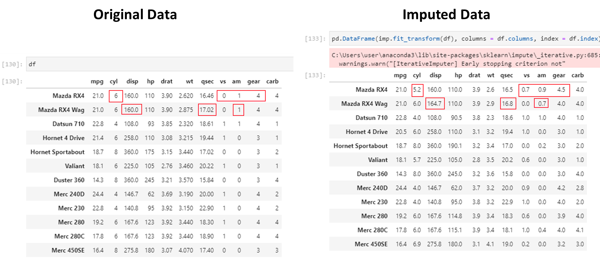
Not bad!!
nan_euclidean_distances, is used to find the nearest neighbors.Source: https://scikit-learn.org/stable/modules/impute.html#knnimpute
Beyond handling missing values, robust analytics pipelines include data validation. Key tools:
ydata-profiling (pip install ydata-profiling): Auto-generates a full HTML report on any DataFrame — distributions, missing values, correlations, outliers.
from ydata_profiling import ProfileReport
report = ProfileReport(df, title="Data Quality Report")
report.to_file("report.html")Great Expectations (pip install great-expectations): Define and enforce data quality rules programmatically. Ideal for production pipelines where bad data must be caught early.
Pandera (pip install pandera): Lightweight schema validation for pandas DataFrames. Catches type errors and constraint violations before they reach your model.
from sklearn.impute import KNNImputer
imputer = KNNImputer(n_neighbors=2, weights="uniform")
pd.DataFrame(imputer.fit_transform(df), columns = df.columns, index = df.index)| mpg | cyl | disp | hp | drat | wt | qsec | vs | am | gear | carb | |
|---|---|---|---|---|---|---|---|---|---|---|---|
| rownames | |||||||||||
| Mazda RX4 | 21.00 | 7.0 | 160.00 | 145.0 | 3.900 | 3.3025 | 16.46 | 0.0 | 1.0 | 4.0 | 3.5 |
| Mazda RX4 Wag | 21.00 | 6.0 | 160.00 | 110.0 | 3.900 | 2.8750 | 17.95 | 0.5 | 1.0 | 4.0 | 4.0 |
| Datsun 710 | 22.80 | 5.0 | 108.00 | 93.0 | 3.850 | 3.3925 | 17.64 | 1.0 | 0.0 | 4.0 | 1.0 |
| Hornet 4 Drive | 20.45 | 6.0 | 292.50 | 118.5 | 3.535 | 3.2150 | 19.44 | 1.0 | 0.0 | 3.0 | 2.5 |
| Hornet Sportabout | 15.80 | 7.0 | 360.00 | 175.0 | 3.150 | 3.4400 | 17.64 | 0.5 | 0.0 | 3.0 | 3.5 |
| Valiant | 18.10 | 6.0 | 225.00 | 121.0 | 3.140 | 3.4600 | 19.72 | 1.0 | 0.0 | 3.0 | 1.0 |
| Duster 360 | 14.30 | 7.0 | 317.90 | 177.5 | 3.210 | 3.5700 | 15.84 | 0.5 | 0.0 | 3.0 | 4.0 |
| Merc 240D | 19.80 | 5.0 | 172.55 | 62.0 | 4.315 | 2.8400 | 20.00 | 1.0 | 0.0 | 4.0 | 1.0 |
| Merc 230 | 24.85 | 4.0 | 140.80 | 64.0 | 3.920 | 2.7075 | 22.90 | 1.0 | 0.0 | 4.0 | 2.0 |
| Merc 280 | 24.85 | 6.0 | 167.60 | 92.5 | 3.920 | 3.4400 | 18.30 | 1.0 | 0.0 | 4.0 | 3.5 |
| Merc 280C | 17.65 | 6.0 | 167.60 | 123.0 | 3.920 | 3.3275 | 18.87 | 1.0 | 0.0 | 4.0 | 4.0 |
| Merc 450SE | 15.80 | 8.0 | 275.80 | 180.0 | 3.070 | 4.0700 | 17.80 | 0.0 | 0.0 | 3.0 | 3.0 |
| Merc 450SL | 17.30 | 8.0 | 275.80 | 180.0 | 3.070 | 3.7300 | 17.60 | 0.0 | 0.0 | 3.0 | 3.0 |
| Merc 450SLC | 15.80 | 8.0 | 275.80 | 180.0 | 3.070 | 3.9000 | 18.00 | 0.0 | 0.0 | 3.0 | 3.0 |
| Cadillac Fleetwood | 10.40 | 7.0 | 472.00 | 205.0 | 2.930 | 5.2500 | 17.98 | 0.0 | 0.0 | 3.0 | 4.0 |
| Lincoln Continental | 10.40 | 8.0 | 460.00 | 215.0 | 3.000 | 5.4240 | 17.82 | 0.0 | 0.0 | 3.0 | 4.0 |
| Chrysler Imperial | 14.70 | 7.0 | 440.00 | 230.0 | 3.230 | 5.3450 | 17.42 | 0.5 | 0.0 | 3.0 | 4.0 |
| Fiat 128 | 32.40 | 4.0 | 105.95 | 66.0 | 4.080 | 2.2000 | 21.40 | 1.0 | 0.5 | 4.0 | 1.0 |
| Honda Civic | 30.40 | 4.0 | 75.70 | 64.0 | 4.930 | 1.6150 | 18.52 | 1.0 | 1.0 | 4.0 | 2.0 |
| Toyota Corolla | 31.40 | 4.0 | 71.10 | 65.0 | 4.220 | 1.8350 | 19.90 | 1.0 | 1.0 | 4.0 | 1.0 |
| Toyota Corona | 21.50 | 4.0 | 120.10 | 121.0 | 3.700 | 2.4650 | 20.01 | 1.0 | 0.5 | 3.0 | 1.0 |
| Dodge Challenger | 15.50 | 7.0 | 318.00 | 150.0 | 2.760 | 3.5200 | 16.87 | 0.5 | 0.0 | 3.0 | 2.0 |
| AMC Javelin | 15.20 | 8.0 | 304.00 | 150.0 | 3.150 | 3.4350 | 17.30 | 0.0 | 0.0 | 3.0 | 2.0 |
| Camaro Z28 | 13.30 | 8.0 | 350.00 | 245.0 | 3.730 | 3.8400 | 15.41 | 0.5 | 0.0 | 3.0 | 4.0 |
| Pontiac Firebird | 19.20 | 8.0 | 400.00 | 175.0 | 3.140 | 3.8450 | 17.05 | 0.0 | 0.0 | 3.0 | 2.0 |
| Fiat X1-9 | 27.30 | 4.0 | 79.00 | 64.0 | 4.080 | 1.9350 | 18.90 | 1.0 | 1.0 | 3.5 | 1.0 |
| Porsche 914-2 | 26.00 | 4.0 | 120.30 | 64.0 | 4.430 | 2.1400 | 19.30 | 0.0 | 0.5 | 5.0 | 1.5 |
| Lotus Europa | 30.40 | 5.0 | 95.10 | 113.0 | 3.770 | 1.5130 | 19.17 | 1.0 | 1.0 | 3.0 | 2.0 |
| Ford Pantera L | 15.80 | 8.0 | 351.00 | 212.5 | 4.220 | 3.1700 | 14.50 | 0.0 | 0.0 | 3.0 | 4.0 |
| Ferrari Dino | 19.70 | 6.0 | 145.00 | 175.0 | 3.140 | 3.4725 | 15.50 | 0.5 | 1.0 | 5.0 | 6.0 |
| Maserati Bora | 15.05 | 8.0 | 301.00 | 335.0 | 3.540 | 3.3925 | 14.60 | 0.0 | 0.0 | 5.0 | 8.0 |
| Volvo 142E | 29.20 | 4.0 | 121.00 | 64.0 | 4.255 | 2.7800 | 18.60 | 1.0 | 1.0 | 4.0 | 2.0 |
Let us compare imputed values to actual data.
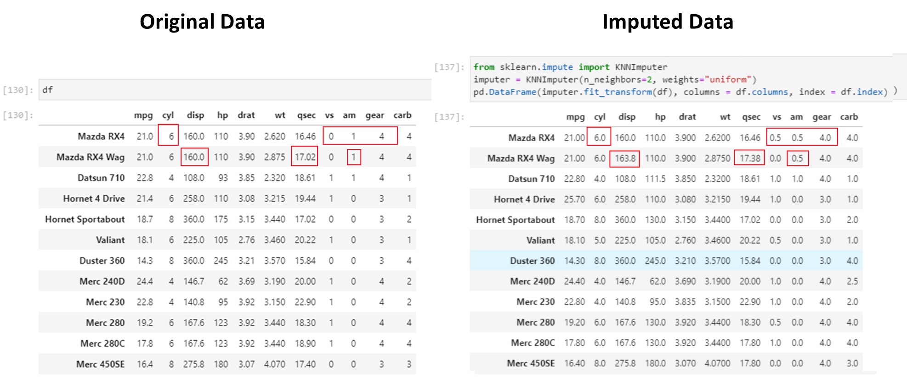
This is even better than the iterative imputer!!
List comprehension returns a list, and takes the following format:
[** function(item) for item in iterable if condition **]
# Create an empty dataframe
import pandas as pd
df = pd.DataFrame(columns = ['Date', 'User 1', 'User 2', 'User 3', 'User 4', 'User 5', 'User 6', 'User 7'])
df
| Date | User 1 | User 2 | User 3 | User 4 | User 5 | User 6 | User 7 |
|---|
# List all columns in a dataframe meeting a criteria
[col for col in df if col.startswith('U')]['User 1', 'User 2', 'User 3', 'User 4', 'User 5', 'User 6', 'User 7']# If condition in a single line
b = 4
a = "positive" if b >= 0 else "negative"
a'positive'List comprehension
newlist = [expression for item in iterable if condition == True]
# Basic list comprehension
x = list(v**2 for v in range(4))
x[0, 1, 4, 9]# List comprehension
fruits = ["apple", "banana", "cherry", "kiwi", "mango"]
newlist = [x for x in fruits if "a" in x]
print(newlist)['apple', 'banana', 'mango']# Subsetting a dict
samples = {k: v for k, v in samples.items() if k not in ["idx", "sentence1", "sentence2"]}# A function to identify text in a string
def corona(text):
corona_story_strings = ['covid', 'corona', 'sars', 'virus', 'coronavirus', 'vaccine']
return any(x in text for x in corona_story_strings)